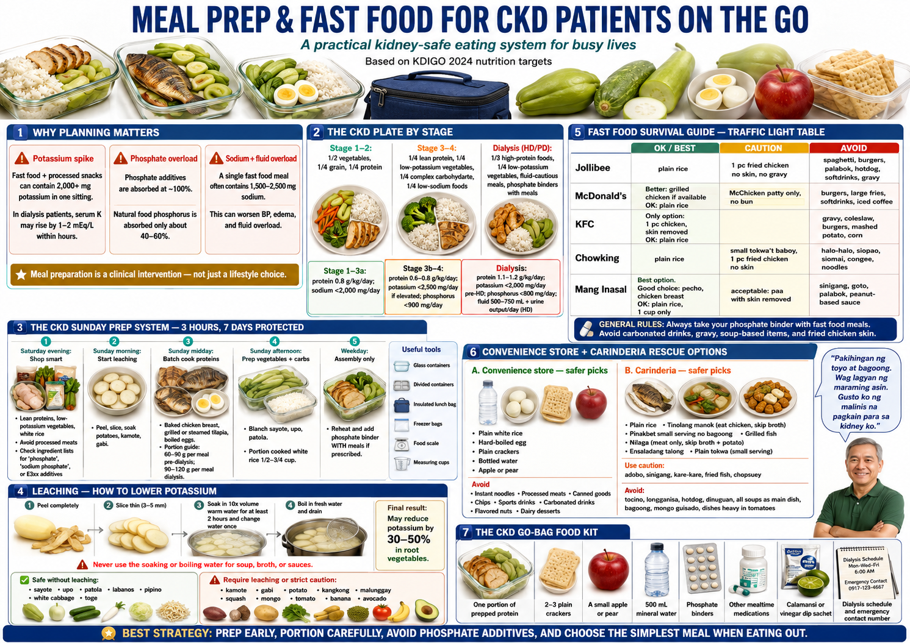
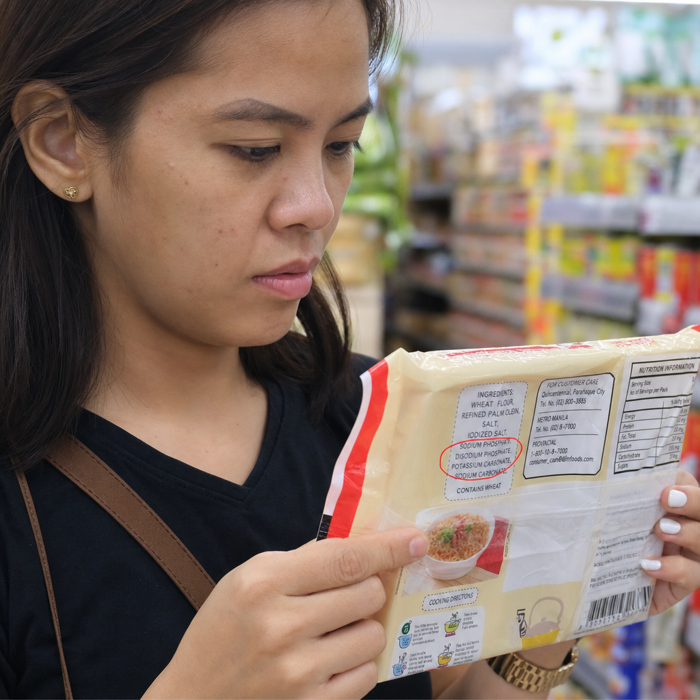
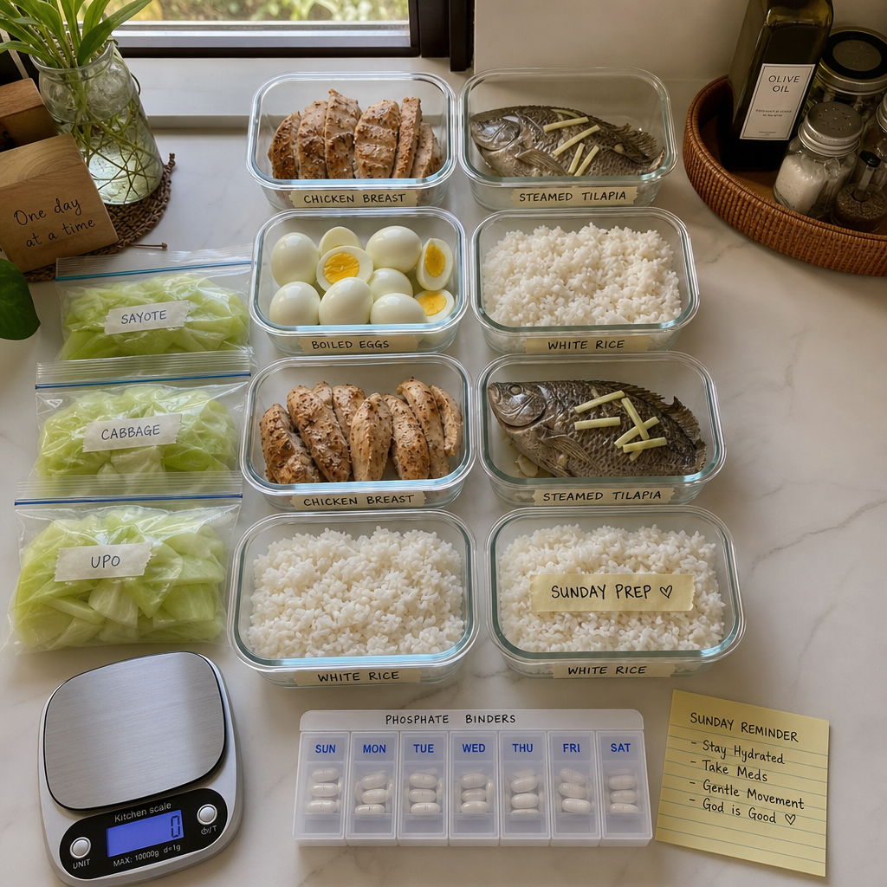
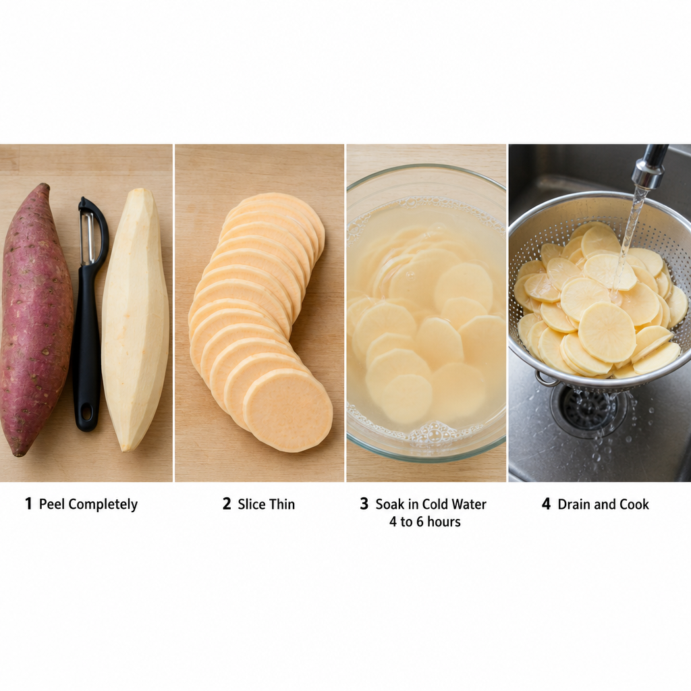
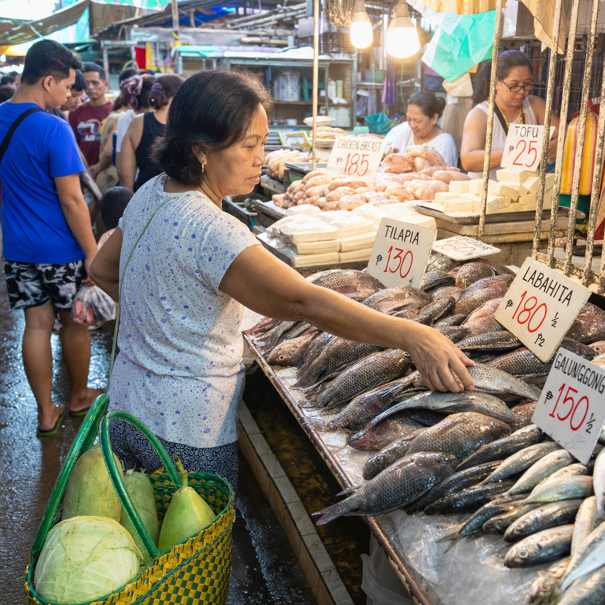
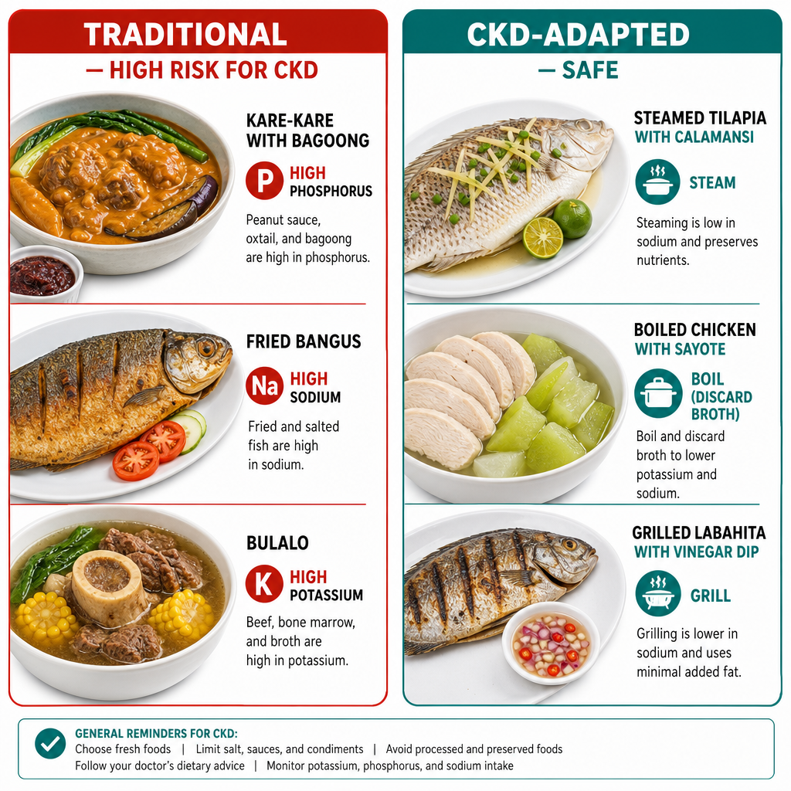
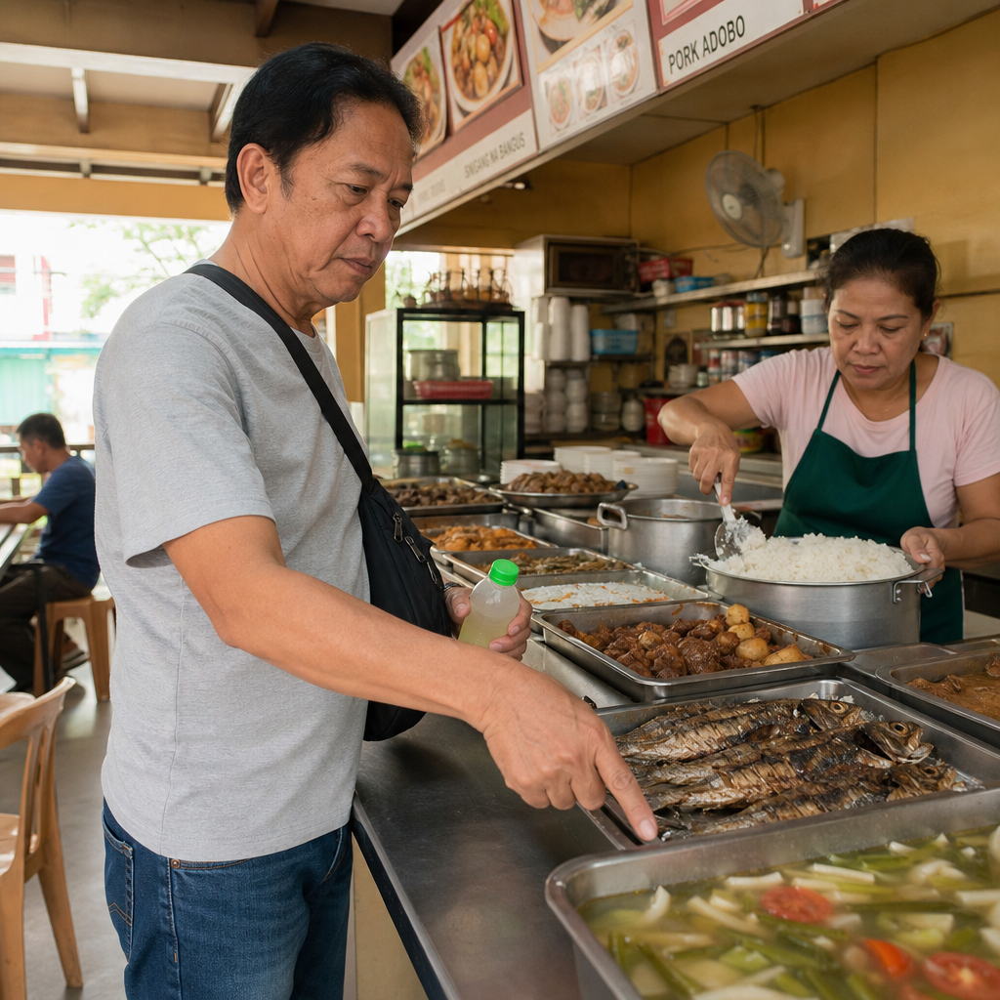
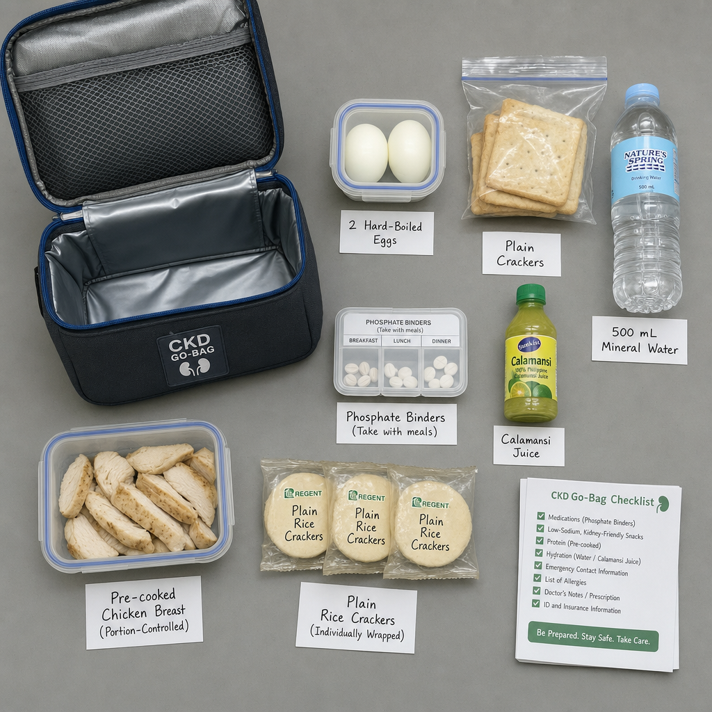

The Problem with Unplanned Eating in Kidney DiseaseAng Problema ng Pagkain nang Walang Plano sa Sakit sa BatoAng Problema sa Pagkaon nga Walay Plano sa Sakit sa KidneyIng Problema ning Pagkain nang Alang Plano sa Sakit sa Batu
In healthy people, a single fast food meal is a minor inconvenience. In a dialysis patient, a single high-potassium, high-phosphorus meal can spike serum potassium by 1–2 mEq/L and trigger cardiac arrhythmia within hours. Phosphate from processed food additives is absorbed at nearly 100% — far more dangerous than natural food phosphorus. Meal preparation is not a lifestyle preference for CKD patients — it is a clinical intervention.Sa mga malusog na tao, ang isang fast food meal ay isang maliit na abala lamang. Sa isang pasyenteng naka-dialysis, ang isang pagkaing mataas sa potassium at phosphorus ay maaaring magpataas ng serum potassium ng 1–2 mEq/L at mag-trigger ng cardiac arrhythmia sa loob ng ilang oras. Ang phosphate mula sa mga processed food additive ay nasisipsip ng halos 100% — mas mapanganib kaysa sa natural na phosphorus mula sa pagkain. Ang paghahanda ng pagkain ay hindi isang kagustuhan sa pamumuhay para sa mga pasyenteng may CKD — ito ay isang klinikal na interbensyon.Sa mga himsog nga tawo, ang usa ka fast food meal usa ka gamay nga abala lamang. Sa usa ka pasyente nga naka-dialysis, ang usa ka pagkaon nga taas sa potassium ug phosphorus makapataas sa serum potassium og 1–2 mEq/L ug makapukaw og cardiac arrhythmia sulod sa pipila ka oras. Ang phosphate gikan sa mga processed food additive nasipsip sa halos 100% — mas mapeligro kay sa natural nga phosphorus gikan sa pagkaon. Ang paghimo sa pagkaon dili usa ka kagustuhan sa kinabuhi alang sa mga pasyente nga adunay CKD — kini usa ka klinikal nga interbensyon.Sa deng malusog na tao, ing metung a fast food meal ya metung a maliit na abala lamang. Sa metung a pasyenteng naka-dialysis, ing metung a pamangang mataas sa potassium at phosphorus ya maaaring magpataas ning serum potassium ning 1–2 mEq/L at mag-trigger ning cardiac arrhythmia sa loob ning ilang oras. Ing phosphate mula sa deng processed food additive ya nasisipsip ning halos 100% — mas mapanganib kaysa sa natural na phosphorus mula king pamangan. Ing paghahanda nining pamangan ya ali metung a kagustuhan sa pamumuhay para king deng pasyenteng may CKD — ini ya metung a klinikal na interbensyon.

The Three Major Threats in Unplanned CKD EatingAng Tatlong Pangunahing Banta sa Pagkain nang Walang Plano sa CKDAng Tulo ka Pangunahing Hulga sa Pagkaon nga Walay Plano sa CKDIng Tatlong Pangunahing Banta sa Pagkain nang Alang Plano sa CKD
⚡ Potassium SpikePagtaas ng PotassiumPagsaka sa PotassiumPagtaas ning Potassium
A single fast food or carinderia sitting can deliver 2,000+ mg of potassium — at or above the entire daily pre-HD limit. Blood potassium can rise by 1–2 mEq/L within hours, causing dangerous cardiac arrhythmia without warning symptoms.Ang isang pagkain sa fast food o carinderia ay maaaring magbigay ng 2,000+ mg ng potassium — katumbas o higit sa buong araw-araw na limitasyon bago ang HD. Ang potassium sa dugo ay maaaring tumaas ng 1–2 mEq/L sa loob ng ilang oras, na nagdudulot ng mapanganib na cardiac arrhythmia nang walang mga babala.Ang usa ka pagkaon sa fast food o carinderia makahatag og 2,000+ mg sa potassium — katumbas o labaw sa tibuok adlaw-adlaw nga limitasyon sa wala pa ang HD. Ang potassium sa dugo makasamot og 1–2 mEq/L sulod sa pipila ka oras, nga naghimo og mapeligro nga cardiac arrhythmia nga walay mga babala.Ing metung a pamangan sa fast food o carinderia ya maaaring magbigay ning 2,000+ mg ning potassium — katumbas o higit sa buoning aldo-aldo na limitasyon bago ing HD. Ing potassium sa daya ya maaaring tumaas ning 1–2 mEq/L sa loob ning ilang oras, na nagdudulot ning mapanganib na cardiac arrhythmia nang waldeng babala.
🧪 Phosphate OverloadLabis na PhosphateSobra nga PhosphateLabis na Phosphate
Inorganic phosphate additives (E338–E452) in fast food, processed meats, and carbonated drinks are absorbed at 90–100% — versus 40–60% from natural foods. A single fried chicken meal may contain more bioavailable phosphorus than an entire day of renal home cooking.Ang mga inorganic phosphate additive (E338–E452) sa fast food, processed meats, at carbonated drinks ay nasisipsip ng 90–100% — kumpara sa 40–60% mula sa natural na pagkain. Ang isang fried chicken meal ay maaaring maglaman ng mas maraming bioavailable phosphorus kaysa sa isang buong araw ng pagluluto sa bahay para sa kidney.Ang mga inorganic phosphate additive (E338–E452) sa fast food, processed meats, ug carbonated drinks nasipsip sa 90–100% — kumpara sa 40–60% gikan sa natural nga pagkaon. Ang usa ka fried chicken meal mahimong adunay mas daghang bioavailable phosphorus kay sa usa ka tibuok adlaw sa pagluto sa balay alang sa kidney.Deng inorganic phosphate additive (E338–E452) sa fast food, processed meats, at carbonated drinks ya nasisipsip ning 90–100% — kumpara king 40–60% mula sa natural na pamangan. Ing metung a fried chicken meal ya maaaring maglaman ning mas dacal a bioavailable phosphorus kaysa sa metung a buoning aldo ning pagluluto king bale para king kidney.
💧 Sodium & Fluid OverloadLabis na Sodium at LikidoSobra nga Sodium ug LikidoLabis na Sodium at Likido
A single fast food meal often contains 1,500–2,500 mg of sodium — near or above the entire daily CKD limit. Combined with fluid, this drives hypertension, fluid retention, and lung congestion between dialysis sessions.Ang isang fast food meal ay madalas na naglalaman ng 1,500–2,500 mg ng sodium — malapit o higit sa buong araw-araw na limitasyon sa CKD. Kasama ang likido, ito ay nagdudulot ng hypertension, pagtitipon ng likido, at pag-congestion ng baga sa pagitan ng mga sesyon ng dialysis.Ang usa ka fast food meal kasagaran adunay 1,500–2,500 mg sa sodium — hapit o labaw sa tibuok adlaw-adlaw nga limitasyon sa CKD. Uban sa likido, kini nagdala og hypertension, pagtipon sa likido, ug congestion sa baga tali sa mga sesyon sa dialysis.Ing metung a fast food meal ya madalas na naglalaman ning 1,500–2,500 mg ning sodium — malapit o higit sa buoning aldo-aldo na limitasyon sa CKD. Kasama ing likido, ini ya nagdudulot ning hypertension, pagtitipon ning likido, at pag-congestion ning baga sa pagitan ning deng sesyon ning dialysis.
Why Inorganic Phosphate Is the Hidden DangerBakit ang Inorganic Phosphate ang Nakatagong PanganibNgano nga ang Inorganic Phosphate ang Nakatago nga PeligroBakit ing Inorganic Phosphate ing Nakatagong Panganib

A Filipino patient reads an ingredient label to spot hidden phosphate additives — inorganic phosphate (E338–E452) is absorbed at nearly 100%, vs. 40–60% from natural food sources.Isang pasyenteng Pilipino ang nagbabasa ng label ng sangkap upang mahanap ang mga nakatagong phosphate additive — ang inorganic phosphate (E338–E452) ay nasisipsip ng halos 100%, kumpara sa 40–60% mula sa mga natural na pinagkukunan ng pagkain.Usa ka Pilipinong pasyente ang nagbasa sa label sa sangkap aron makit-an ang mga nagtago nga phosphate additive — ang inorganic phosphate (E338–E452) nasipsip sa halos 100%, kumpara sa 40–60% gikan sa mga natural nga tinubdan sa pagkaon.Isang pasyenteng Pilipino ing nagbabasa ning label ning sangkap para mahanap deng nakatagong phosphate additive — ing inorganic phosphate (E338–E452) ya nasisipsip ning halos 100%, kumpara king 40–60% mula sa deng natural na pinagkukunan nining pamangan.
Natural food phosphorus (from fish, meat, legumes) is bound to organic molecules and only 40–60% absorbed. Inorganic phosphate additives — labeled as E338 to E452, "sodium phosphate," "calcium phosphate," "polyphosphate," or "disodium phosphate" on ingredient lists — are absorbed at nearly 100%. They are found in processed meats, fast food burgers, fried chicken breading, carbonated drinks, instant noodles, processed cheeses, and flavored snacks.Ang natural na phosphorus mula sa pagkain (mula sa isda, karne, legume) ay nakakabit sa mga organikong molekula at 40–60% lamang ang nasisipsip. Ang mga inorganic phosphate additive — na may label na E338 hanggang E452, "sodium phosphate," "calcium phosphate," "polyphosphate," o "disodium phosphate" sa mga listahan ng sangkap — ay nasisipsip ng halos 100%. Matatagpuan sila sa mga processed meat, fast food burger, breading ng fried chicken, carbonated drinks, instant noodles, processed cheese, at flavored snacks.Ang natural nga phosphorus gikan sa pagkaon (gikan sa isda, karne, legume) nakakabit sa mga organikong molekula ug 40–60% lamang ang nasipsip. Ang mga inorganic phosphate additive — nga may label nga E338 hangtod E452, "sodium phosphate," "calcium phosphate," "polyphosphate," o "disodium phosphate" sa mga listahan sa sangkap — nasipsip sa halos 100%. Makita sila sa mga processed meat, fast food burger, breading sa fried chicken, carbonated drinks, instant noodles, processed cheese, ug flavored snacks.Ing natural na phosphorus mula king pamangan (mula sa isda, karne, legume) ya nakakabit sa deng organikong molekula at 40–60% lamang ing nasisipsip. Deng inorganic phosphate additive — na may label na E338 anggang E452, "sodium phosphate," "calcium phosphate," "polyphosphate," o "disodium phosphate" sa deng listahan ning sangkap — ya nasisipsip ning halos 100%. Matatagpuan sila sa deng processed meat, fast food burger, breading ning fried chicken, carbonated drinks, instant noodles, processed cheese, at flavored snacks.
The Ingredient Label TestAng Pagsusuri sa Label ng mga SangkapAng Pagsusi sa Label sa mga SangkapIng Pagsusuri sa Label ning deng Sangkap
Scan every ingredient list for any word containing "PHOS" — sodium phosphate, calcium phosphate, pyrophosphate, polyphosphate, phosphoric acid. If you see it: that product has inorganic phosphate. Put it back. This single habit, applied consistently in supermarkets and convenience stores, may do more for serum phosphorus than any other dietary intervention.I-scan ang bawat listahan ng mga sangkap para sa anumang salitang naglalaman ng "PHOS" — sodium phosphate, calcium phosphate, pyrophosphate, polyphosphate, phosphoric acid. Kung makita ninyo ito: ang produktong iyon ay may inorganic phosphate. Ibalik ito. Ang isang gawi na ito, na isinasagawa nang tuloy-tuloy sa mga supermarket at convenience store, ay maaaring gumawa ng mas marami para sa serum phosphorus kaysa sa anumang iba pang interbensyon sa diyeta.I-scan ang matag listahan sa mga sangkap alang sa bisan unsang pulong nga adunay "PHOS" — sodium phosphate, calcium phosphate, pyrophosphate, polyphosphate, phosphoric acid. Kung makita ninyo kini: ang maong produkto adunay inorganic phosphate. Ibalik kini. Kini nga usa ka batasan, nga gibuhat nga kanunay sa mga supermarket ug convenience store, mahimong mas makatabang sa serum phosphorus kay sa bisan unsang laing interbensyon sa diyeta.I-scan ing bawat listahan ning deng sangkap para king anumang salitang naglalaman ning "PHOS" — sodium phosphate, calcium phosphate, pyrophosphate, polyphosphate, phosphoric acid. Nung makita ninyo ini: ing produktong iyun ya may inorganic phosphate. Ibalik ini. Ing metung a gawi na ini, na isinasagawa nang tuloy-tuloy sa deng supermarket at convenience store, ya maaaring gumawa ning mas marami para king serum phosphorus kaysa sa anumang iba pang interbensyon king diyeta.
Meal Prep as a Clinical InterventionMeal Prep bilang Klinikal na InterbensyonMeal Prep isip Klinikal nga InterbensyonMeal Prep bilang Klinikal na Interbensyon
Patients who batch-cook and meal prep show measurably better serum phosphorus, potassium, and albumin levels. The mechanism is straightforward: preparation allows leaching, portion control, ingredient selection, and additive avoidance. Even 2–3 hours of Sunday meal prep can protect you from the equivalent of 7 days of dietary risk. Think of it as part of your prescription — not optional.Ang mga pasyenteng nag-batch-cook at nag-meal prep ay nagpapakita ng measurable na mas mabuting antas ng serum phosphorus, potassium, at albumin. Ang mekanismo ay malinaw: ang paghahanda ay nagpapahintulot ng leaching, kontrol sa portion, pagpili ng sangkap, at pag-iwas sa mga additive. Kahit 2–3 oras lamang ng meal prep tuwing Linggo ay makapoprotekta sa inyo mula sa katumbas ng 7 araw na dietary risk. Isipin ito bilang bahagi ng inyong reseta — hindi opsyonal.Ang mga pasyente nga nag-batch-cook ug nag-meal prep nagpakita og measurable nga mas maayo nga antas sa serum phosphorus, potassium, ug albumin. Ang mekanismo klaro: ang paghimo nagtugotan sa leaching, kontrol sa portion, pagpili sa sangkap, ug paglikay sa mga additive. Bisan 2–3 oras lamang sa meal prep matag Domingo makaprotekta sa inyo gikan sa katumbas sa 7 adlaw nga dietary risk. Hunahunaa kini isip bahin sa inyong reseta — dili opsyonal.Deng pasyenteng nag-batch-cook at nag-meal prep ya nagpapakita ning measurable na mas mabuting antas ning serum phosphorus, potassium, at albumin. Ing mekanismo ya malinaw: ing paghahanda ya nagpapahintulot ning leaching, kontrol sa portion, pagpili ning sangkap, at pag-iwas sa deng additive. Kahit 2–3 oras lamang ning meal prep tuwing Lutu ya makapoprotekta sa inyo mula sa katumbas ning 7 aldo na dietary risk. Isipin ini bilang bahagi ning inyong reseta — ali opsyonal.
The Filipino Dietary ChallengeAng Hamon ng Diyeta ng mga PilipinoAng Hamon sa Diyeta sa mga PilipinoIng Hamon ning Diyeta ning deng Pilipino
The typical Filipino diet presents particular challenges for CKD patients. Bagoong, patis, and toyo are staples that deliver concentrated sodium and purines. Sinigang, nilaga, and bulalo — while wholesome in concept — become hazardous when the broth is consumed (purines and potassium leach into the liquid). Processed meats (tocino, longganisa, hotdog) are loaded with phosphate preservatives. Beer and softdrinks with high-fructose corn syrup raise uric acid. Understanding which aspects of Filipino cuisine to keep, modify, or replace — rather than abandoning it entirely — is what makes CKD nutrition sustainable in the Philippine context.Ang tipikal na diyeta ng mga Pilipino ay nagtatanghal ng mga partikular na hamon para sa mga pasyenteng may CKD. Ang bagoong, patis, at toyo ay mga pangunahing pagkain na nagbibigay ng concentrated na sodium at purines. Ang sinigang, nilaga, at bulalo — kahit na kapaki-pakinabang sa konsepto — ay nagiging mapanganib kapag ang sabaw ay kinain (ang mga purines at potassium ay lumalabas sa likido). Ang mga processed meat (tocino, longganisa, hotdog) ay puno ng mga phosphate preservative. Ang beer at softdrinks na may high-fructose corn syrup ay nagpapataas ng uric acid. Ang pag-unawa sa kung aling aspeto ng lutong Pilipino ang dapat panatilihin, baguhin, o palitan — sa halip na ganap na talikuran — ang nagpapanatili ng CKD nutrition na napapanatili sa konteksto ng Pilipinas.Ang tipikal nga diyeta sa mga Pilipino nagpresentar og mga partikular nga hamon alang sa mga pasyente nga adunay CKD. Ang bagoong, patis, ug toyo mga pangunahing pagkaon nga naghatag og concentrated nga sodium ug purines. Ang sinigang, nilaga, ug bulalo — bisan pa nga maayo sa konsepto — nahimong mapeligro kung ang sabaw kaonon (ang mga purines ug potassium mogawas sa likido). Ang mga processed meat (tocino, longganisa, hotdog) puno sa mga phosphate preservative. Ang beer ug softdrinks nga adunay high-fructose corn syrup nagpataas sa uric acid. Ang pagsabot sa kung unsang aspeto sa lutong Pilipino ang kinahanglan ipadayon, usbon, o ilisan — imbes nga hingpit nga biyaan — mao ang naghimo sa CKD nutrition nga matungtungon sa konteksto sa Pilipinas.Ing tipikal na diyeta ning deng Pilipino ya nagtatanghal ning deng partikular na hamon para king deng pasyenteng may CKD. Ing bagoong, patis, at toyo ya deng pangunahining pamangan na nagbibigay ning concentrated na sodium at purines. Ing sinigang, nilaga, at bulalo — kahit na kapaki-pakinabang sa konsepto — ya nagiging mapanganib nung ing sabaw ya kinain (deng purines at potassium ya lumalabas sa likido). Deng processed meat (tocino, longganisa, hotdog) ya puno ning deng phosphate preservative. Ing beer at softdrinks na may high-fructose corn syrup ya nagpapataas ning uric acid. Ing pag-unawa sa nung aling aspeto ning lutong Pilipino ing dapat panatilihin, baguhin, o palitan — sa halip na ganap na talikuran — ing nagpapanatili ning CKD nutrition na napapanatili sa konteksto ning Pilipinas.
The CKD Plate Method — by StageAng CKD Plate Method — Ayon sa StageAng CKD Plate Method — Sumala sa StageIng CKD Plate Method — Ayon sa Stage

Daily Nutrient Targets by CKD StageAraw-araw na mga Target sa Nutrisyon Ayon sa CKD StageAdlaw-adlaw nga mga Target sa Nutrisyon Sumala sa CKD StageAldo-aldo na deng Target sa Nutrisyon Ayon sa CKD Stage
| Nutrient | Stage 1–3a | Stage 3b–4 | Dialysis HD/PD |
|---|---|---|---|
| Protein | 0.8 g/kg/day | 0.6–0.8 g/kg/day | 1.1–1.2 g/kg/day |
| Sodium | <2,000 mg/day | <2,000 mg/day | <2,000 mg/day |
| Potassium | Unrestricted unless elevated | <2,500 mg/day if K⁺ elevated | <2,000 mg/day pre-HD |
| Phosphorus | Avoid additives, moderate natural | <900 mg/day, no additives | <800 mg/day + binders all meals |
| Fluid | None unless edema | Restrict if edema | 500–750 mL + urine output/day |
| Phosphate binder | Generally not needed | Begin if P >4.5 mg/dL | WITH every meal — non-negotiable |
Why the Plate Flips on DialysisBakit Nagbabago ang Plato sa DialysisNgano nga Nagbag-o ang Plato sa DialysisBakit Nagbabago ing Plato sa Dialysis
Dialysis patients need more protein (lost during sessions) but stricter limits on potassium, phosphorus, sodium, and fluid — the opposite of pre-dialysis CKD. Many patients are confused by this reversal. A pre-dialysis patient eating 0.6 g/kg protein should increase to 1.1–1.2 g/kg once dialysis begins. Missing this transition leads to malnutrition and worse outcomes.Ang mga pasyenteng naka-dialysis ay nangangailangan ng mas maraming protina (nawawala sa mga sesyon) ngunit mas mahigpit na mga limitasyon sa potassium, phosphorus, sodium, at likido — kabaligtaran ng pre-dialysis CKD. Maraming pasyente ang nalilito sa pagbabaling ito. Ang isang pre-dialysis na pasyente na kumakain ng 0.6 g/kg protina ay dapat tumaas sa 1.1–1.2 g/kg kapag nagsimula na ang dialysis. Ang pagkawala ng transisyong ito ay nagdudulot ng malnutrition at mas masamang resulta.Ang mga pasyente nga naka-dialysis nanginahanglan og mas daghang protina (nawala sa mga sesyon) apan mas higpit nga mga limitasyon sa potassium, phosphorus, sodium, ug likido — kabaliktaran sa pre-dialysis CKD. Daghang pasyente ang nalibog niini nga pagbabag-o. Ang usa ka pre-dialysis nga pasyente nga nagkaon og 0.6 g/kg protina kinahanglan motaas sa 1.1–1.2 g/kg kung magsugod na ang dialysis. Ang pagkawala niini nga transisyon nagdala og malnutrition ug mas daotan nga mga resulta.Deng pasyenteng naka-dialysis ya nangangailangan ning mas dacal a protina (nawaala sa deng sesyon) ngarud mas mahigpit na deng limitasyon sa potassium, phosphorus, sodium, at likido — kabaligtaran ning pre-dialysis CKD. Maraming pasyente ing nalilini sa pagbabaling ini. Ing metung a pre-dialysis na pasyente na kumakain ning 0.6 g/kg protina ya dapat tumaas sa 1.1–1.2 g/kg nung nagsimula na ing dialysis. Ing pagkaala ning transisyong ini ya nagdudulot ning malnutrition at mas masamang resulta.
Protein Sources by CKD Stage — What ChangesMga Pinagkukunan ng Protina Ayon sa CKD Stage — Ano ang NagbabagoMga Tinubdan sa Protina Sumala sa CKD Stage — Unsa ang Nagbabag-oDeng Pinagkukunan ning Protina Ayon sa CKD Stage — Ano ing Nagbabago
✅ Best protein sources (all stages)Pinakamahusay na mga pinagkukunan ng protina (lahat ng stage)Pinaka-maayo nga mga tinubdan sa protina (tanan nga stage)Pinakamahusay na deng pinagkukunan ning protina (lahat ning stage)
- Egg whites — very low phosphorus, excellent protein qualityPuti ng itlog — napakababa ng phosphorus, napakagandang kalidad ng protinaPuti sa itlog — labi ka ubos ang phosphorus, labing maayo nga kalidad sa protinaPuti ning itlog — napakababa ning phosphorus, napakagandang kalidad ning protina
- Chicken breast, boiled (discard broth)Dibdib ng manok, nilaga (itapon ang sabaw)Dughan sa manok, nilaga (itambog ang sabaw)Dibdib ning manok, nilaga (itapon ing sabaw)
- Tilapia or cream dory, steamed/grilledTilapia o cream dory, sinangkutsa/inihawTilapia o cream dory, sinabog/inihawTilapia o cream dory, sinangkutsa/inihaw
- Pork tenderloin, boiledPork tenderloin, nilagaPork tenderloin, nilagaPork tenderloin, nilaga
- Firm tofu (rinsed) — low K, moderate PFirm tofu (hinugasan) — mababa ang K, katamtamang PFirm tofu (hinugasan) — ubos ang K, katamtaman ang PFirm tofu (hinugasan) — mababa ing K, katamtamang P
⚠️ Limit in Stage 3b+ / DialysisLimitahan sa Stage 3b+ / DialysisLimitahan sa Stage 3b+ / DialysisLimitahan sa Stage 3b+ / Dialysis
- Whole eggs (yolk = high phosphorus)Buong itlog (pula = mataas ang phosphorus)Tibuok nga itlog (pula = taas ang phosphorus)Buong itlog (pula = mataas ing phosphorus)
- Bangus/milkfish (moderate P — limit portion)Bangus (katamtamang P — limitahan ang portion)Bangus (katamtaman ang P — limitahan ang portion)Bangus (katamtamang P — limitahan ing portion)
- Red meat — once per day max, small servingPulang karne — minsan sa isang araw nang maximum, maliit na servingPulang karne — kausa sa usa ka adlaw nang maximum, gamay nga servingPulang karne — misan sa metung a aldo nang maximum, maliit na serving
- Shellfish (hipon, tahong) — high phosphorusMga shellfish (hipon, tahong) — mataas ang phosphorusMga shellfish (hipon, tahong) — taas ang phosphorusDeng shellfish (hipon, tahong) — mataas ing phosphorus
❌ Avoid in CKD Stage 3b+Iwasan sa CKD Stage 3b+Likayi sa CKD Stage 3b+Iwasan sa CKD Stage 3b+
- Organ meats (atay, goto, dinuguan) — extreme phosphorus & purinesMga laman-loob (atay, goto, dinuguan) — matinding phosphorus at purinesMga laman-sulod (atay, goto, dinuguan) — grabeng phosphorus ug purinesDeng laman-loob (atay, goto, dinuguan) — matinding phosphorus at purines
- Processed meats (tocino, longganisa, hotdog) — phosphate preservativesMga processed na karne (tocino, longganisa, hotdog) — phosphate preservativeMga processed nga karne (tocino, longganisa, hotdog) — phosphate preservativeDeng processed na karne (tocino, longganisa, hotdog) — phosphate preservative
- Dried/canned fish (tuyo, sardinas) — very high sodium + phosphorusPinatuyong/de-latang isda (tuyo, sardinas) — napakataas ng sodium + phosphorusGipauga/de-latang isda (tuyo, sardinas) — labi ka taas nga sodium + phosphorusPinatuyong/de-latang isda (tuyo, sardinas) — napakataas ning sodium + phosphorus
The CKD Sunday Prep System — 3 Hours, 7 Days ProtectedAng CKD Sunday Prep System — 3 Oras, 7 Araw na ProtektadoAng CKD Sunday Prep System — 3 Oras, 7 Adlaw nga ProtektadoIng CKD Sunday Prep System — 3 Oras, 7 Aldo na Protektado

The Sunday prep system in action — six labeled containers of portioned proteins, leached vegetables, and cooked rice, plus a weekly pill organizer. Three hours of prep, seven days of kidney-safe eating.Ang Sunday prep system sa aksyon — anim na may label na lalagyan ng portioned na protina, leached na gulay, at lutong kanin, kasama ang lingguhang pill organizer. Tatlong oras ng paghahanda, pitong araw ng ligtas na pagkain para sa bato.Ang Sunday prep system sa aksyon — unom ka may label nga sudlanan sa portioned nga protina, leached nga utanon, ug lutong kanin, uban ang lingguhang pill organizer. Tulo ka oras nga paghimo, pitong adlaw nga luwas nga pagkaon alang sa kidney.Ing Sunday prep system sa aksyon — anim na may label na lalagyan ning portioned na protina, leached na gulay, at lutong kanin, kasama ing lingguhang pill organizer. Tatlong oras ning paghahanda, pinining aldo ning ligtas na pamangan para king batu.
The goal is to cook once, eat safely all week. This system batches high-effort tasks — leaching, portioning, cooking proteins — on one day so that weekday meals require only assembly and reheating. Patients who follow this system consistently report dramatically fewer dietary lapses and better lab results.Ang layunin ay magluto nang isang beses, kumain nang ligtas sa buong linggo. Ang sistemang ito ay nagtitipon ng mga gawaing nangangailangan ng malaking pagsisikap — leaching, portioning, pagluluto ng mga protina — sa isang araw upang ang mga pagkain sa araw ng trabaho ay nangangailangan lamang ng pag-assemble at pag-reheat. Ang mga pasyenteng sumusunod sa sistemang ito nang tuloy-tuloy ay nag-uulat ng mas kaunting mga pagkabigo sa diyeta at mas magandang mga resulta sa laboratoryo.Ang layunin magluto og kausa, mokaon nga luwas sa tibuok semana. Kini nga sistema nagtipon sa mga buluhaton nga nanginahanglan og dakong paningkamot — leaching, portioning, pagluto sa mga protina — sa usa ka adlaw aron ang mga pagkaon sa adlaw sa trabaho nanginahanglan lamang og pag-assemble ug pag-reheat. Ang mga pasyente nga nagsunod niini nga sistema nga kanunay nag-report og mas kaunti nga mga pagkabigo sa diyeta ug mas maayo nga mga resulta sa laboratoryo.Ing layunin ya magluto nang metung a beses, kumain nang ligtas sa buoning lutu. Ing sistemang ini ya nagtitipon ning deng gawaing nangangailangan ning malda a pagsisikap — leaching, portioning, pagluluto ning deng protina — sa metung a aldo para dening pamangan sa aldo ning obran ya nangangailangan lamang ning pag-assemble at pag-reheat. Deng pasyenteng sumusunod sa sistemang ini nang tuloy-tuloy ya nag-uulat ning mas kaunting deng pagkabigo king diyeta at mas maganddeng resulta sa laboratoryo.
Saturday evening — Shop smartGabi ng Sabado — Mamili nang matalinoGabii sa Sabado — Mamalit nga maalamonGabi ning Sabado — Mamili nang matalino
Plan the week's menu before shopping. Buy lean proteins: chicken breast, tilapia, labahita, pork tenderloin, eggs. Low-potassium vegetables: sayote, upo, patola, cabbage (repolyo), kangkong (for leaching), labanos. Carbohydrate base: white rice. Skip processed meats entirely. At the supermarket, check every ingredient label for "phosphate," "sodium phosphate," or any E3xx number — put it back if you find one.Planuhin ang menu ng linggo bago mamili. Bumili ng mga lean protein: dibdib ng manok, tilapia, labahita, pork tenderloin, mga itlog. Mga gulay na mababa ang potassium: sayote, upo, patola, repolyo, kangkong (para sa leaching), labanos. Base ng carbohydrate: puting bigas. Huwag bilhin ang mga processed na karne. Sa supermarket, suriin ang bawat label ng sangkap para sa "phosphate," "sodium phosphate," o anumang E3xx na numero — ibalik ito kung makita ninyo.Planoha ang menu sa semana sa wala pa mamalit. Palita og mga lean protein: dughan sa manok, tilapia, labahita, pork tenderloin, mga itlog. Mga utanon nga ubos ang potassium: sayote, upo, patola, repolyo, kangkong (alang sa leaching), labanos. Base sa carbohydrate: puting bugas. Ayaw palita og mga processed nga karne. Sa supermarket, susihon ang matag label sa sangkap alang sa "phosphate," "sodium phosphate," o bisan unsang E3xx nga numero — ibalik kini kung makita ninyo.Planuhin ing menu nining lutu bago mamili. Bumili ning deng lean protein: dibdib ning manok, tilapia, labahita, pork tenderloin, deng itlog. Deng gulay na mababa ing potassium: sayote, upo, patola, repolyo, kangkong (para king leaching), labanos. Base ning carbohydrate: puting bigas. Eka bilhin deng processed na karne. Sa supermarket, suriin ing bawat label ning sangkap para king "phosphate," "sodium phosphate," o anumang E3xx na numero — ibalik ini nung makita ninyo.
Shopping list template (one week, 1 person, dialysis stage):Template ng listahan sa pamimili (isang linggo, 1 tao, dialysis stage):Template sa listahan sa pagpalit (usa ka semana, 1 tawo, dialysis stage):Template ning listahan sa pamimili (metung a lutu, 1 tao, dialysis stage):
- 500g chicken breast · 300g tilapia fillets · 6 eggs
- 2 sayote · 1 head repolyo · 2 upo · 2 patola · 1 labanos
- 1 kg white rice · 1 loaf white bread (plain, no enriched)1 kg puting bigas · 1 tinapay (simple, hindi enriched)1 kg puting bugas · 1 tinapay (simple, dili enriched)1 kg puting bigas · 1 tinapay (simple, ali enriched)
- Garlic, ginger, calamansi — for seasoning without saltBawang, luya, calamansi — para sa pagse-season nang walang asinBawang, luya, calamansi — alang sa pagpanambok nga walay asinBawang, luya, calamansi — para king pagse-season nang alang asin
- Sky Flakes plain crackers (check label — original version is low sodium)Sky Flakes plain crackers (suriin ang label — ang orihinal na bersyon ay mababa ang sodium)Sky Flakes plain crackers (susihon ang label — ang orihinal nga bersyon ubos ang sodium)Sky Flakes plain crackers (suriin ing label — ing orihinal na bersyon ya mababa ing sodium)
- 500 mL mineral water x5 (pre-portioned for the week)500 mL mineral water x5 (pre-portioned para sa linggo)500 mL mineral water x5 (pre-portioned alang sa semana)500 mL mineral water x5 (pre-portioned para king lutu)
Sunday morning — Start leaching (see next section)Umaga ng Linggo — Simulan ang leaching (tingnan ang susunod na seksyon)Buntag sa Domingo — Sugdi ang leaching (tan-awa ang sunod nga seksyon)Umaga ning Lutu — Simulan ing leaching (tingnan ing susunod na seksyon)
Begin leaching root vegetables (kamote, gabi, patatas) 4–6 hours before cooking. Peel, slice thin (3–5 mm), soak in a large volume of water — change water twice. This reduces potassium by 30–50%. Do not skip this step for these specific vegetables. While they soak, you can proceed to the next steps.Simulan ang leaching ng mga ugat na gulay (kamote, gabi, patatas) 4–6 oras bago magluto. Alisan ng balat, hiwain nang manipis (3–5 mm), ibabad sa malaking dami ng tubig — palitan ang tubig nang dalawang beses. Binabawasan nito ang potassium ng 30–50%. Huwag laktawan ang hakbang na ito para sa mga partikular na gulay na ito. Habang sila ay nababad, maaari kayong magpatuloy sa mga susunod na hakbang.Sugdi ang leaching sa mga ugat nga utanon (kamote, gabi, patatas) 4–6 oras sa wala pa magluto. Panitan, hiwaon og nipis (3–5 mm), ibabad sa dakong dami sa tubig — usbon ang tubig og kaduha. Kini nagkunhod sa potassium og 30–50%. Ayaw pretermiton kini nga lakang alang niini nga mga espesipikong utanon. Samtang sila nababad, makapadayon kamo sa mga sunod nga lakang.Simulan ing leaching ning deng ugat na gulay (kamote, gabi, patatas) 4–6 oras bago magluto. Alisan ning balat, hiwain nang manipis (3–5 mm), ibabad sa malda a dami nining danum — palitan ining danum nang dalawang beses. Binabawasan nini ing potassium ning 30–50%. Eka laktawan ing hakbang na ini para king deng partikular na gulay na ini. Habang sila ya nababad, maaari kayung magpatuloy sa deng susunod na hakbang.
Sunday midday — Batch-cook proteinsTanghali ng Linggo — Magluto ng mga protina sa batchUdtong tutok sa Domingo — Magluto sa mga protina sa batchTanghali ning Lutu — Magluto ning deng protina sa batch
Cook 5–7 days of protein in one session. Best options:Magluto ng protina para sa 5–7 araw sa isang sesyon. Pinakamahusay na mga pagpipilian:Magluto sa protina alang sa 5–7 adlaw sa usa ka sesyon. Pinaka-maayo nga mga pagpipilian:Magluto ning protina para king 5–7 aldo sa metung a sesyon. Pinakamahusay na deng pagpipilian:
- Baked chicken breast — season with garlic, calamansi juice, small amount of salt. Bake at 180°C for 25 minutes. Produces consistent, portion-controlled results.Baked na dibdib ng manok — timplahan ng bawang, katas ng calamansi, kaunting asin. I-bake sa 180°C sa loob ng 25 minuto. Nagbibigay ng consistent, portion-controlled na resulta.Baked nga dughan sa manok — timplahan og bawang, katas sa calamansi, gamay nga asin. I-bake sa 180°C sulod sa 25 minuto. Naghatag og consistent, portion-controlled nga resulta.Baked na dibdib ning manok — timplahan ning bawang, katas ning calamansi, kaunting asin. I-bake sa 180°C sa loob ning 25 minuto. Nagbibigay ning consistent, portion-controlled na resulta.
- Steamed tilapia — season with ginger and a small amount of salt. Steam 12–15 minutes. Low in phosphorus compared to fried.Sinangkutsa na tilapia — timplahan ng luya at kaunting asin. I-steam ng 12–15 minuto. Mas mababa ang phosphorus kumpara sa pinirito.Sinabog nga tilapia — timplahan og luya ug gamay nga asin. I-steam og 12–15 minuto. Mas ubos ang phosphorus kumpara sa pinirito.Sinangkutsa na tilapia — timplahan ning luya at kaunting asin. I-steam ning 12–15 minuto. Mas mababa ing phosphorus kumpara king pinirini.
- Boiled eggs — 6–8 at a time. Hard-boiled (10 min) for portability; soft-boiled (7 min) for meals at home.Nilaga na itlog — 6–8 nang sabay. Hard-boiled (10 min) para sa portability; soft-boiled (7 min) para sa mga pagkain sa bahay.Nilaga nga itlog — 6–8 sa usa ka higayon. Hard-boiled (10 min) alang sa portability; soft-boiled (7 min) alang sa mga pagkaon sa balay.Nilaga na itlog — 6–8 nang sabay. Hard-boiled (10 min) para king portability; soft-boiled (7 min) para king dening pamangan king bale.
- Pork tenderloin — boil in plain water with garlic and ginger. Discard the broth (purines). Slice into 80g portions.Pork tenderloin — pakuluan sa simpleng tubig na may bawang at luya. Itapon ang sabaw (purines). Hiwain sa 80g na mga portion.Pork tenderloin — paboilonon sa simple nga tubig nga adunay bawang ug luya. Itambog ang sabaw (purines). Hiwaon sa 80g nga mga portion.Pork tenderloin — pakuluan sa simplening danum na may bawang at luya. Itapon ing sabaw (purines). Hiwain sa 80g na deng portion.
Portion sizes: 60–90g per meal for pre-dialysis · 90–120g per meal for dialysis patients. Label containers with the date. Refrigerate (3–4 days) or freeze (up to 3 months in zip bags).Mga laki ng portion: 60–90g bawat pagkain para sa pre-dialysis · 90–120g bawat pagkain para sa mga pasyenteng naka-dialysis. Lagyan ng label ang mga lalagyan na may petsa. I-refrigerate (3–4 araw) o i-freeze (hanggang 3 buwan sa mga zip bag).Mga gidak-on sa portion: 60–90g matag pagkaon alang sa pre-dialysis · 90–120g matag pagkaon alang sa mga pasyente nga naka-dialysis. Lagyan og label ang mga sudlanan nga adunay petsa. I-refrigerate (3–4 adlaw) o i-freeze (hangtod 3 bulan sa mga zip bag).Deng laki ning portion: 60–90g bawat pamangan para king pre-dialysis · 90–120g bawat pamangan para king deng pasyenteng naka-dialysis. Lagyan ning label deng lalagyan na may petsa. I-refrigerate (3–4 aldo) o i-freeze (anggang 3 bulan sa deng zip bag).
Sunday afternoon — Prep vegetables and carbsHapon ng Linggo — Ihanda ang mga gulay at carbsHapon sa Domingo — Ipreparar ang mga utanon ug carbsHapon ning Lutu — Ihanda deng gulay at carbs
Blanch low-potassium vegetables in boiling water for 2–3 minutes; drain and cool. Portion into individual daily servings in small bags or containers: sayote (½ cup), upo (½ cup), patola (½ cup), cabbage (½ cup). Cook white rice in large batch — portion into individual meal containers (½–¾ cup cooked per meal). Prepare one base sauce: garlic in olive oil, or a light ginger broth — no patis, low sodium — that can be used across multiple dishes during the week.I-blanch ang mga gulay na mababa ang potassium sa kumukulong tubig sa loob ng 2–3 minuto; patuyuin at palamigan. I-portion sa mga indibidwal na araw-araw na serving sa maliliit na bag o lalagyan: sayote (½ tasa), upo (½ tasa), patola (½ tasa), repolyo (½ tasa). Magluto ng puting bigas sa malaking batch — i-portion sa mga indibidwal na lalagyan ng pagkain (½–¾ tasa na niluto bawat pagkain). Maghanda ng isang base sauce: bawang sa olive oil, o magaan na sabaw ng luya — walang patis, mababa ang sodium — na maaaring gamitin sa maraming lutuin sa buong linggo.I-blanch ang mga utanon nga ubos ang potassium sa nagbukal nga tubig sulod sa 2–3 minuto; patuyoon ug pabugnawon. I-portion sa mga indibidwal nga adlaw-adlaw nga serving sa gagmay nga bag o sudlanan: sayote (½ tasa), upo (½ tasa), patola (½ tasa), repolyo (½ tasa). Magluto sa puting bugas sa dakong batch — i-portion sa mga indibidwal nga sudlanan sa pagkaon (½–¾ tasa nga giluto matag pagkaon). Maghimo og usa ka base sauce: bawang sa olive oil, o magaan nga sabaw sa luya — walay patis, ubos ang sodium — nga magamit sa daghang mga luto sa tibuok semana.I-blanch deng gulay na mababa ing potassium sa kumukuloning danum sa loob ning 2–3 minuto; patuyuin at palamigan. I-portion sa deng indibidwal na aldo-aldo na serving sa maliliit na bag o lalagyan: sayote (½ tasa), upo (½ tasa), patola (½ tasa), repolyo (½ tasa). Magluto ning puting bigas sa malda a batch — i-portion sa deng indibidwal na lalagyan nining pamangan (½–¾ tasa na niluto bawat pamangan). Maghanda ning metung a base sauce: bawang sa olive oil, o magaan na sabaw ning luya — alang patis, mababa ing sodium — na maaaring gamitin sa dacal a lutuin sa buoning lutu.
Monday–Saturday — Assembly only (10 minutes per meal)Lunes–Sabado — Pag-assemble lamang (10 minuto bawat pagkain)Lunes–Sabado — Pag-assemble lamang (10 minuto matag pagkaon)Lunes–Sabado — Pag-assemble lamang (10 minuto bawat pamangan)
Pull one protein portion + one vegetable portion + one rice portion. Reheat in microwave 2 minutes or pan-heat with minimal oil. Add your phosphate binder WITH the first bite of the meal — not before, not after. Pack in a portable container if eating away from home. This is your primary strategy against fast food temptation.Kunin ang isang portion ng protina + isang portion ng gulay + isang portion ng kanin. I-reheat sa microwave ng 2 minuto o i-pan-heat na may kaunting langis. Idagdag ang inyong phosphate binder KASAMA ang unang kagat ng pagkain — hindi bago, hindi pagkatapos. I-pack sa isang portable na lalagyan kung kakain sa labas ng bahay. Ito ang inyong pangunahing estratehiya laban sa tukso ng fast food.Kuhaa ang usa ka portion sa protina + usa ka portion sa utanon + usa ka portion sa kan-on. I-reheat sa microwave og 2 minuto o i-pan-heat nga adunay gamay nga lana. Idugang ang inyong phosphate binder UBAN sa unang kagat sa pagkaon — dili sa wala pa, dili human. I-pack sa usa ka portable nga sudlanan kung mokaon gawas sa balay. Kini ang inyong pangunahing estratehiya batok sa tukso sa fast food.Kunin ing metung a portion ning protina + metung a portion ning gulay + metung a portion ning kanin. I-reheat sa microwave ning 2 minuto o i-pan-heat na may kaunting langis. Idagdag ing inyong phosphate binder KASAMA ing unang kagat nining pamangan — ali bago, ali kapabanuan. I-pack sa metung a portable na lalagyan nung kakain sa labas ning bale. Ini ing inyong pangunahing estratehiya laban sa tukso ning fast food.
Essential Prep ToolsMga Kinakailangang Kagamitan sa PaghahandaMga Gikinahanglan nga Kagamitan sa PaghimoDeng Kinakailangang Kagamitan sa Paghahanda
🫙 Glass containers with lidsMga glass container na may takipMga glass container nga adunay taklobDeng glass container na may takip
Microwave-safe, no plastic leaching. For refrigerated proteins and pre-portioned meals.Ligtas sa microwave, walang plastic leaching. Para sa mga refrigerated na protina at pre-portioned na pagkain.Luwas sa microwave, walay plastic leaching. Alang sa mga refrigerated nga protina ug pre-portioned nga pagkaon.Ligtas sa microwave, alang plastic leaching. Para king deng refrigerated na protina at pre-portioned na pamangan.
📦 Divided portion containersMga lalagyan na may hatianMga sudlanan nga adunay dibisyonDeng lalagyan na may hatian
Keeps protein, carb, and vegetable separate until mealtime. Prevents mixing of high-potassium foods with safe ones.Pinapanatiling hiwalay ang protina, carb, at gulay hanggang oras ng pagkain. Pinipigilan ang paghahalo ng mga pagkaing mataas sa potassium sa mga ligtas.Nagpadayon nga lain-lain ang protina, carb, ug utanon hangtod oras sa pagkaon. Nagpugong sa pagsagol sa mga pagkaon nga taas sa potassium sa mga luwas.Pinapanatiling hialay ing protina, carb, at gulay anggang oras nining pamangan. Pinipigilan ing paghahalo ning dening pamangang mataas sa potassium sa deng ligtas.
🧊 Insulated lunch bagInsulated na bag para sa tanghalianInsulated nga bag alang sa panghaponInsulated na bag para king tanghalian
Keeps food safe for 4 hours without refrigeration — critical for dialysis patients at the center and workers with long commutes.Pinapanatiling ligtas ang pagkain sa loob ng 4 na oras nang walang refrigeration — kritikal para sa mga pasyenteng naka-dialysis sa sentro at mga manggagawa na may mahabang biyahe.Nagpadayon nga luwas ang pagkaon sulod sa 4 ka oras nga walay refrigeration — kritikal alang sa mga pasyente nga naka-dialysis sa sentro ug mga trabahante nga adunay taas nga biyahe.Pinapanatiling ligtas ining pamangan sa loob ning 4 na oras nang alang refrigeration — kritikal para king deng pasyenteng naka-dialysis sa sentro at deng manggagawa na may mahabang biyahe.
🏷️ Freezer zip bags + labelMga freezer zip bag + labelMga freezer zip bag + labelDeng freezer zip bag + label
For 2–3 week protein batch cooking. Write the date and contents on each bag.Para sa 2–3 linggong batch cooking ng protina. Isulat ang petsa at nilalaman sa bawat bag.Alang sa 2–3 semanang batch cooking sa protina. Isulat ang petsa ug sulod sa matag bag.Para king 2–3 lutung batch cooking ning protina. Isulat ing petsa at nilalaman king bawat bag.
⚖️ Food scale + measuring cupsTimbangan ng pagkain + mga sukatanTimbangan sa pagkaon + mga sukatanTimbangan nining pamangan + deng sukatan
For accurate potassium and phosphorus portioning. Especially important for dialysis patients. A digital scale is more reliable than estimating.Para sa tumpak na portioning ng potassium at phosphorus. Lalo na mahalaga para sa mga pasyenteng naka-dialysis. Ang digital scale ay mas mapagkakatiwalaan kaysa sa pagtatantya.Alang sa tumpak nga portioning sa potassium ug phosphorus. Labi na importante alang sa mga pasyente nga naka-dialysis. Ang digital scale mas masaligan kay sa pagbanabana.Para king tumpak na portioning ning potassium at phosphorus. Lalo na mahalaga para king deng pasyenteng naka-dialysis. Ing digital scale ya mas mapagkakatialaan kaysa sa pagtatantya.
💊 Labeled pill caseLalagyan ng gamot na may labelSudlanan sa tambal nga adunay labelLalagyan nining gamut na may label
Keep a separate pill case for meal-time medications (binders, antihypertensives). Many patients forget their binder during fast food or out-of-home meals.Maghanda ng hiwalay na lalagyan ng gamot para sa mga gamot sa oras ng pagkain (binders, antihypertensives). Maraming pasyente ang nakakalimot ng kanilang binder sa panahon ng fast food o pagkain sa labas ng bahay.Maghimo og lain nga sudlanan sa tambal alang sa mga tambal sa oras sa pagkaon (binders, antihypertensives). Daghang pasyente ang nakalimot sa ilang binder sa panahon sa fast food o pagkaon gawas sa balay.Maghanda ning hialay na lalagyan nining gamut para king dening gamut sa oras nining pamangan (binders, antihypertensives). Maraming pasyente ing nakakalimot ning kanilang binder sa panahon ning fast food o pamangan sa labas ning bale.
Seasoning Without Sodium — Filipino FlavorsPagse-season Nang Walang Sodium — Mga Lasa ng PilipinoPagpanambok nga Walay Sodium — Mga Lami sa PilipinoPagse-season Nang Alang Sodium — Deng Lasa ning Pilipino
One of the biggest challenges in CKD meal prep is keeping food palatable without patis, toyo, or heavy salt. These Filipino flavor-building techniques work safely for most CKD patients:Isa sa mga pinakamalaking hamon sa meal prep para sa CKD ay ang panatilihing masarap ang pagkain nang walang patis, toyo, o mabigat na asin. Ang mga teknik na ito sa pagbuo ng lasa ng Pilipino ay ligtas para sa karamihan ng mga pasyenteng may CKD:Usa sa mga pinakadakilang hamon sa meal prep alang sa CKD mao ang pagpadayon nga lami ang pagkaon nga walay patis, toyo, o bug-at nga asin. Kini nga mga teknik sa pagpanambok sa Pilipino luwas alang sa kadaghanan sa mga pasyente nga adunay CKD:Isa sa deng pinakamalda a hamon sa meal prep para king CKD ya ing panatilihing masarap ining pamangan nang alang patis, toyo, o mabigat na asin. Deng teknik na ini sa pagbuo ning lasa ning Pilipino ya ligtas para king karamihan ning deng pasyenteng may CKD:
Calamansi juiceKatas ng calamansiKatas sa calamansiKatas ning calamansi
Adds brightness and acidity. Use fresh-squeezed on grilled fish or chicken instead of any condiment. Very low sodium, low potassium in small amounts.Nagdadagdag ng kaliwanagan at kaasiman. Gumamit ng sariwang piga sa inihaw na isda o manok sa halip ng anumang condiment. Napakababa ng sodium, mababa ang potassium sa maliliit na dami.Nagdugang og kahayag ug kaasido. Gamiton ang sariwang piga sa inihaw nga isda o manok imbes og bisan unsang condiment. Labi ka ubos ang sodium, ubos ang potassium sa gagmay nga gidaghanon.Nagdadagdag ning kaliwanagan at kaasiman. Gumamit ning sariwang piga sa inihaw na isda o manok sa halip ning anumang condiment. Napakababa ning sodium, mababa ing potassium sa maliliit na dami.
Garlic + gingerBawang + luyaBawang + luyaBawang + luya
Foundation aromatics for almost all Filipino cooking. Sauté in a small amount of oil or use fresh. Both are low in potassium and phosphorus in typical cooking amounts.Mga pangunahing aromatic para sa halos lahat ng lutong Pilipino. Igisa sa kaunting langis o gamitin nang sariwa. Ang dalawa ay mababa sa potassium at phosphorus sa karaniwang dami ng pagluluto.Mga pundasyon nga aromatic alang sa halos tanan nga lutong Pilipino. Igisa sa gamay nga lana o gamiton nga sariwa. Ang duha ubos sa potassium ug phosphorus sa tipikal nga gidaghanon sa pagluto.Deng pangunahing aromatic para king halos lahat ning lutong Pilipino. Igisa king kaunting langis o gamitin nang sariwa. Ing dalawa ya mababa sa potassium at phosphorus sa karaniwang dami ning pagluluto.
White vinegar / sukang maasimPuting suka / sukang maasimPuting suka / sukang maasimPuting suka / sukang maasim
Mimics the tartness of patis and toyo without sodium. Use as a dip for grilled meat and fish. Plain cane vinegar is the safest choice.Ginagaya ang kaasiman ng patis at toyo nang walang sodium. Gamitin bilang sawsawan para sa inihaw na karne at isda. Ang simpleng suka ng tubo ang pinakaligtas na pagpipilian.Nagsundog sa kaasiman sa patis ug toyo nga walay sodium. Gamiton isip sawsawan alang sa inihaw nga karne ug isda. Ang simple nga suka sa tubo ang pinaka-luwas nga pagpipilian.Ginagaya ing kaasiman ning patis at toyo nang alang sodium. Gamitin bilang sawsawan para king inihaw na karne at isda. Ing simpleng suka ning tubo ing pinakaligtas na pagpipilian.
Onion + tomato (small amounts)Sibuyas + kamatis (maliliit na dami)Sibuyas + kamatis (gagmay nga gidaghanon)Sibuyas + kamatis (maliliit na dami)
For pre-dialysis and Stage 1–3 patients. Tomatoes are moderate-K — limit to 1 small. Onions in cooking amounts are generally safe. Avoid in advanced CKD if K+ is high.Para sa mga pre-dialysis at Stage 1–3 na pasyente. Ang mga kamatis ay katamtamang K — limitahan sa 1 maliit. Ang mga sibuyas sa dami ng pagluluto ay pangkalahatang ligtas. Iwasan sa advanced CKD kung mataas ang K+.Alang sa mga pre-dialysis ug Stage 1–3 nga pasyente. Ang mga kamatis katamtaman ang K — limitahan sa 1 gamay. Ang mga sibuyas sa dami sa pagluto kasagarang luwas. Likayi sa advanced CKD kung taas ang K+.Para king deng pre-dialysis at Stage 1–3 na pasyente. Deng kamatis ya katamtamang K — limitahan sa 1 maliit. Deng sibuyas sa dami ning pagluluto ya pangkalahatang ligtas. Iwasan sa advanced CKD nung mataas ing K+.
Reduced-sodium soy sauce (tiny amount)Reduced-sodium na toyo (kaunting dami)Reduced-sodium nga toyo (gamay kaayo nga dami)Reduced-sodium na toyo (kaunting dami)
If you cannot abandon toyo entirely, use 1–2 drops of reduced-sodium brand as a finish — not as a marinade. Every tablespoon of regular toyo = 900 mg sodium.Kung hindi ninyo kayang ganap na bitawan ang toyo, gumamit ng 1–2 patak ng reduced-sodium brand bilang panghuling lasa — hindi bilang marinade. Bawat kutsara ng regular na toyo = 900 mg sodium.Kung dili ninyo mabiyaan ang toyo nang hingpit, gamiton ang 1–2 patak sa reduced-sodium brand isip panghuling lami — dili isip marinade. Matag kutsara sa regular nga toyo = 900 mg sodium.Nung ali ninyo kayang ganap na bitawan ing toyo, gumamit ning 1–2 patak ning reduced-sodium brand bilang panghuling lasa — ali bilang marinade. Bawat kutsara ning regular na toyo = 900 mg sodium.
❌ Avoid: salt substitutesIwasan: mga kapalit ng asinLikayi: mga kapalit sa asinIwasan: deng kapalit ning asin
Products like NuSalt, NoSalt, and Lo-Salt contain potassium chloride instead of sodium chloride. These are extremely dangerous for CKD patients — they can cause fatal hyperkalemia. Never use them.Ang mga produkto tulad ng NuSalt, NoSalt, at Lo-Salt ay naglalaman ng potassium chloride sa halip na sodium chloride. Ang mga ito ay napaka-mapanganib para sa mga pasyenteng may CKD — maaari silang magdulot ng nakamamatay na hyperkalemia. Huwag kailanman gamitin.Ang mga produkto sama sa NuSalt, NoSalt, ug Lo-Salt adunay potassium chloride imbes nga sodium chloride. Kini labi ka mapeligro alang sa mga pasyente nga adunay CKD — mahimong hinungdan sa nakamamatay nga hyperkalemia. Ayaw gayod gamiton.Deng produkto tulad ning NuSalt, NoSalt, at Lo-Salt ya naglalaman ning potassium chloride sa halip na sodium chloride. Deng ini ya napaka-mapanganib para king deng pasyenteng may CKD — maaari silang magdulot ning nakamamatay na hyperkalemia. Eka kailanman gamitin.
Leaching — How to Reduce Potassium in VegetablesLeaching — Paano Bawasan ang Potassium sa mga GulayLeaching — Unsaon Pagkunhod sa Potassium sa mga UtanonLeaching — Paano Bawasan ing Potassium sa deng Gulay
Leaching is the process of reducing potassium content in vegetables by soaking in water — potassium is water-soluble and moves from the vegetable into the surrounding water. When done correctly, it can reduce potassium by 30–50% in root vegetables. It does not eliminate potassium entirely, but it significantly expands the variety of foods CKD patients can safely eat.Ang leaching ay ang proseso ng pagbabawas ng potassium sa mga gulay sa pamamagitan ng pagbabad sa tubig — ang potassium ay natutunaw sa tubig at lumilipat mula sa gulay patungo sa nakapaligid na tubig. Kapag ginawa nang tama, mababawasan nito ang potassium ng 30–50% sa mga ugat na gulay. Hindi nito ganap na naaalis ang potassium, ngunit malaki ang pagpapalawak ng iba't ibang pagkain na maaaring ligtas na kainin ng mga pasyenteng may CKD.Ang leaching mao ang proseso sa pagkunhod sa potassium sa mga utanon pinaagi sa pagbabad sa tubig — ang potassium natunaw sa tubig ug molihok gikan sa utanon padulong sa nakalibut nga tubig. Kung buhaton nga husto, makakuha kini og pagkunhod sa potassium og 30–50% sa mga ugat nga utanon. Dili niini hingpit nga mawagtang ang potassium, apan makadako kini sa lain-laing pagkaon nga luwas nga makaon sa mga pasyente nga adunay CKD.Ing leaching ya ing proseso ning pagbabawas ning potassium sa deng gulay sa pamamagitan ning pagbabad sa danum — ing potassium ya natutunaw sa danum at lumilipat mula sa gulay patungo sa nakapaligid na danum. Nung ginawa nang tama, mababawasan nini ing potassium ning 30–50% sa deng ugat na gulay. Ali nini ganap na naaalis ing potassium, ngarud malaki ing pagpapalawak ning iba't ibaning pamangan na maaaring ligtas na kainin ning deng pasyenteng may CKD.

The four leaching steps: (1) Peel completely — most potassium sits near the skin. (2) Slice thin 3–5 mm. (3) Soak in cold water for 4–6 hours, changing water once. (4) Drain and cook. Reduces potassium in kamote and other root vegetables by 30–50%.Ang apat na hakbang ng leaching: (1) Alisan ng balat nang buo — karamihan ng potassium ay malapit sa balat. (2) Hiwain nang manipis na 3–5 mm. (3) Ibabad sa malamig na tubig ng 4–6 oras, palitan ang tubig nang isang beses. (4) Alisan ng tubig at lutuin. Binabawasan ang potassium sa kamote at iba pang ugat na gulay ng 30–50%.Ang upat ka lakang sa leaching: (1) Panitan og hingpit — kadaghanan sa potassium duol sa panit. (2) Hiwaon og nipis nga 3–5 mm. (3) Ibabad sa bugnaw nga tubig og 4–6 ka oras, ilisan ang tubig og kausa. (4) Hubaron ug lutoa. Nagkunhod sa potassium sa kamote ug uban pang ugat nga utanon og 30–50%.Ing apat na hakbang ning leaching: (1) Alisan ning balat nang buo — karamihan ning potassium ya malapit sa balat. (2) Hiwain nang manipis na 3–5 mm. (3) Ibabad sa malamig na danum ning 4–6 oras, palitan ining danum nang metung a beses. (4) Alisan nining danum at lutuin. Binabawasan ing potassium sa kamote at iba pang ugat na gulay ning 30–50%.
Peel CompletelyAlisan ng Balat nang BuoPanitan Nang HingpitAlisan ning Balat nang Buo
Remove all skin — most potassium sits near the surface. Applies to: kamote, gabi, patatas, singkamas.Alisin ang lahat ng balat — karamihan ng potassium ay malapit sa ibabaw. Naaangkop sa: kamote, gabi, patatas, singkamas.Kuhaa ang tanan nga panit — kadaghanan sa potassium duol sa ibabaw. Magamit sa: kamote, gabi, patatas, singkamas.Alisin ing lahat ning balat — karamihan ning potassium ya malapit sa ibabaw. Naaangkop sa: kamote, gabi, patatas, singkamas.
Slice Thin (3–5 mm)Hiwain nang Manipis (3–5 mm)Hiwaon og Nipis (3–5 mm)Hiwain nang Manipis (3–5 mm)
Thin slices or small cubes create more surface area, allowing more potassium to move into the water. Thinner is more effective.Ang mga manipis na hiwa o maliliit na cubes ay naglilikha ng mas malaking surface area, na nagpapahintulot sa mas maraming potassium na lumipat sa tubig. Mas manipis, mas epektibo.Ang mga nipis nga hiwa o gagmay nga cubes nagmugna og mas daghang surface area, nagtugotan sa mas daghang potassium nga molihok sa tubig. Mas nipis, mas epektibo.Deng manipis na hiwa o maliliit na cubes ya naglilikha ning mas malda a surface area, na nagpapahintulot sa mas dacal a potassium na lumipat sa danum. Mas manipis, mas epektibo.
Soak (10× Volume Warm Water)Ibabad (10× Dami ng Mainit na Tubig)Ibabad (10× Dami sa Mainit nga Tubig)Ibabad (10× Dami ning Mainit na Danum)
Minimum 2 hours. Change water once at the 1-hour mark. Warm water is more effective than cold. Discard ALL soak water.Minimum 2 oras. Palitan ang tubig nang isang beses sa ika-1 oras. Ang mainit na tubig ay mas epektibo kaysa sa malamig. Itapon ang LAHAT ng tubig na ginamit sa pagbabad.Minimum 2 oras. Usbon ang tubig og kausa sa ika-1 oras. Ang mainit nga tubig mas epektibo kay sa bugnaw. Itambog ang TANAN nga tubig nga gigamit sa pagbabad.Minimum 2 oras. Palitan ining danum nang metung a beses sa ika-1 oras. Ing mainit na danum ya mas epektibo kaysa sa malamig. Itapon ing LAHAT nining danum na ginamit sa pagbabad.
Boil in Fresh Water, DrainPakuluan sa Sariwang Tubig, PatuyuinPaboilonon sa Bag-ong Tubig, PatuyoonPakuluan sa Sariwang Danum, Patuyuin
Boil in a new large volume of water. Drain immediately. Never reuse this liquid for soup, broth, or sauce — all the leached potassium is in it.Pakuluan sa bagong malaking dami ng tubig. Agad patuyuin. Huwag kailanman muling gamitin ang likidong ito para sa sopas, sabaw, o sarsa — lahat ng naalis na potassium ay nasa loob nito.Paboilonon sa bag-ong dakong dami sa tubig. Dayon patuyoon. Ayaw kailanman gamiton pag-usab kini nga likido alang sa sopas, sabaw, o sarsa — ang tanan nga nahugas nga potassium anaa niini.Pakuluan sa bagong malda a dami nining danum. Agad patuyuin. Eka kailanman muling gamitin ing likidong ini para king sopas, sabaw, o sarsa — lahat ning naalis na potassium ya nasa loob nini.
Never Use Leaching Water for CookingHuwag Kailanman Gumamit ng Tubig sa Leaching para sa PaglulutoAyaw Kailanman Gamiton ang Tubig sa Leaching alang sa PaglutoEka Kailanman Gumamit ning Danum sa Leaching para king Pagluluto
The soaking and boiling water contains concentrated potassium from the vegetables. Using it as soup base, broth, or sauce completely negates the leaching benefit — and may make the dish more dangerous than if you had not leached at all.Ang tubig na ginamit sa pagbabad at pagpapakulo ay naglalaman ng concentrated na potassium mula sa mga gulay. Ang paggamit nito bilang base ng sopas, sabaw, o sarsa ay ganap na nagpapawalang-bisa ng benepisyo ng leaching — at maaaring gawing mas mapanganib ang ulam kaysa kung hindi kayo nag-leach.Ang tubig sa pagbabad ug pagpapabukal adunay concentrated nga potassium gikan sa mga utanon. Ang paggamit niini isip base sa sopas, sabaw, o sarsa hingpit nga nagpawalay-kapuslanan sa benepisyo sa leaching — ug mahimong mas mapeligro ang pagkaon kay sa kung wala pa moleach.Ining danum na ginamit sa pagbabad at pagpapakulo ya naglalaman ning concentrated na potassium mula sa deng gulay. Ing paggamit nini bilang base ning sopas, sabaw, o sarsa ya ganap na nagpapaalang-bisa ning benepisyo ning leaching — at maaaring gawing mas mapanganib ing ulam kaysa nung ali kayu nag-leach.
✅ Vegetables Safe Without LeachingMga Gulay na Ligtas Kahit Walang LeachingMga Utanon nga Luwas Bisan Walay LeachingDeng Gulay na Ligtas Kahit Alang Leaching
Naturally low potassium — no special treatment needed:Natural na mababa ang potassium — walang espesyal na pagtrato na kailangan:Natural nga ubos ang potassium — walay espesyal nga pagtambal ang gikinahanglan:Natural na mababa ing potassium — alang espesyal na pagtrato na kailangan:
- Sayote / chayote — excellent all-stage choice
- Upo / bottle gourd — very low potassium
- Patola / sponge gourd (luffa)
- Labanos / radish — blanch briefly
- Pipino / cucumber — raw or lightly cooked
- Repolyo / white cabbage — boil briefly
- Toge / bean sprouts — blanch
- Talong / eggplant — moderate; OK for Stage 1–3
- Ampalaya / bitter gourd — small serving; has modest xanthine oxidase inhibition (may mildly lower uric acid)
- Pechay / bok choy — small amounts, blanched
⚠️ Require Leaching or AvoidanceNangangailangan ng Leaching o Pag-iwasNanginahanglan og Leaching o PaglikayNangangailangan ning Leaching o Pag-iwas
High potassium — leach before eating, or avoid in advanced CKD:Mataas na potassium — i-leach bago kainin, o iwasan sa advanced CKD:Taas nga potassium — i-leach sa wala pa kaonon, o likayi sa advanced CKD:Mataas na potassium — i-leach bago kainin, o iwasan sa advanced CKD:
- Kamote / sweet potato — leach thoroughly; 437 mg K/100g
- Gabi / taro — leach thoroughly; 319 mg K/100g
- Patatas / potato — leach thoroughly; 421 mg K/100g
- Kangkong / water spinach — high K, small portions only; leach
- Malunggay / moringa — 337 mg K/50g; avoid in advanced CKD
- Kalabasa / squash — 286 mg K/100g; small serving only
- Monggo / mung beans — avoid in dialysis
- Kamatis / tomato — moderate K; limit to 1 small or avoid in Stage 4–5
- Saging / banana — 358–422 mg K each; avoid Stage 4–5
- Avocado — 975 mg K each; avoid entirely in Stage 3b+
How Long to Leach Each VegetableGaano Katagal ang Pag-leach sa Bawat GulayUnsa Kadugay ang Pag-leach sa Matag UtanonGaano Katagal ing Pag-leach sa Bawat Gulay
| Vegetable | K+ per 100g (raw) | Minimum Soak | K+ Reduction | Notes |
|---|---|---|---|---|
| Patatas / potato | 421 mg | 4 hours | ~50% | Peel, slice to 3mm, change water twice |
| Kamote / sweet potato | 437 mg | 4–6 hours | ~40% | Longer soak needed; still moderate K after |
| Gabi / taro | 319 mg | 3–4 hours | ~40% | Wear gloves — raw gabi causes skin irritation |
| Kangkong (water spinach) | 312 mg/cup raw | 1–2 hours | ~30% | Blanch in fresh water after soaking; very small serving |
| Kalabasa / squash | 286 mg | 2 hours | ~35% | Small serving only even after leaching |
Eating Kidney-Safe on a Filipino BudgetKumain nang Ligtas para sa Bato sa Loob ng Filipino BudgetPagkaon nga Luwas alang sa Kidney sa Sulod sa Filipino BudgetKumain nang Ligtas para king Batu sa Loob ning Filipino Budget

Smart shopping at the Filipino wet market — tilapia, labahita, and galunggong offer affordable protein; sayote, upo, and cabbage are low-potassium, low-cost vegetables. A kidney-safe diet does not have to be expensive.Matalinong pamimili sa palengke ng Pilipino — ang tilapia, labahita, at galunggong ay nagbibigay ng abot-kayang protina; ang sayote, upo, at repolyo ay mga gulay na mababa ang potassium at presyo. Hindi kailangang mahal ang isang diyeta na ligtas para sa bato.Maalamong pagpalit sa wet market sa Pilipinas — ang tilapia, labahita, ug galunggong naghatag og baratong protina; ang sayote, upo, ug repolyo mga utanon nga ubos ang potassium ug presyo. Dili kinahanglan nga mahal ang usa ka diyeta nga luwas alang sa kidney.Matalinong pamimili sa palengke ning Pilipino — ing tilapia, labahita, at galunggong ya nagbibigay ning abot-kayang protina; ing sayote, upo, at repolyo ya deng gulay na mababa ing potassium at presyo. Ali kailangang mahal ing metung a diyeta na ligtas para king batu.
One of the biggest practical barriers to CKD nutrition in the Philippines is cost. Dialysis is already financially devastating — phosphate binders, medications, and transportation consume most of the family's income before food is even considered. A kidney-safe diet does not have to be expensive. This section focuses on the lowest-cost options that remain safe.Isa sa mga pinakamalaking praktikal na hadlang sa nutrisyon ng CKD sa Pilipinas ay ang gastos. Ang dialysis ay nakakasira na ng pinansyal — ang mga phosphate binder, gamot, at transportasyon ay kumokonsumo ng karamihan ng kita ng pamilya bago pa man isaalang-alang ang pagkain. Ang isang diyeta na ligtas para sa bato ay hindi kailangang mahal. Ang seksyong ito ay nakatuon sa mga pinaka-mababang gastos na opsyon na nananatiling ligtas.Usa sa mga pinakadakilang praktikal nga babag sa nutrisyon sa CKD sa Pilipinas mao ang gasto. Ang dialysis nagaguba na sa pinansyal — ang mga phosphate binder, tambal, ug transportasyon nakonsumo sa kadaghanan sa kita sa pamilya sa wala pa gisidlak ang pagkaon. Ang usa ka diyeta nga luwas alang sa kidney dili kinahanglan nga mahal. Kini nga seksyon nakasentro sa pinaka-ubos nga gasto nga mga opsyon nga nagpabilin nga luwas.Isa sa deng pinakamalda a praktikal na hadlang sa nutrisyon ning CKD king Pilipinas ya ing gastos. Ing dialysis ya nakakasira na ning pinansyal — deng phosphate binder, gamut, at transportasyon ya kumokonsumo ning karamihan ning kita ning pamilya bago pa man isaalang-alang ining pamangan. Ing metung a diyeta na ligtas para king batu ya ali kailangang mahal. Ing seksyong ini ya nakatuon sa deng pinaka-mababang gastos na opsyon na nananatiling ligtas.
Cheapest Safe Protein Sources (Ranked by Cost)Pinaka-Murang Ligtas na Pinagkukunan ng Protina (Nakaranggo ayon sa Gastos)Pinaka-barato nga Luwas nga Tinubdan sa Protina (Nakaranggo sumala sa Gasto)Pinaka-Murang Ligtas na Pinagkukunan ning Protina (Nakaranggo ayon sa Gastos)
| Protein Source | Approx. Cost (PHP) | Per 90g Serving | CKD Suitability |
|---|---|---|---|
| Egg (boiled, 1 whole) | ₱8–10 each | ₱16–20 (2 eggs) | All stages. Egg white = very low phosphorus. Limit yolks in Stage 3b+. |
| Tilapia (fresh, whole) | ₱100–130/kg | ₱10–15 | All stages. Lower phosphorus than bangus. Steam or grill — never fry in battered coating. |
| Tokwa / firm tofu | ₱25–35 block (~300g) | ₱8–12 | All stages. Rinse well before cooking. Moderate phosphorus but plant-based (lower absorption). |
| Chicken breast (wet market) | ₱180–220/kg | ₱16–20 | All stages. Boil and discard broth. No marinating in toyo or patis. |
| Cream dory / pangasius | ₱160–200/kg | ₱14–18 | All stages. Very low phosphorus. Best steamed or poached. Frozen fillets are convenient. |
| Pork tenderloin (kasim, boiled) | ₱250–300/kg | ₱22–27 | All stages. Boil and discard broth. No tocino or longganisa substitutes. |
Cheapest Safe VegetablesPinaka-Murang Ligtas na mga GulayPinaka-barato nga Luwas nga mga UtanonPinaka-Murang Ligtas na deng Gulay
Philippine wet markets and palengkes offer some of the most kidney-safe vegetables at very low cost. These are consistently available year-round and remain affordable even during El Niño supply disruptions:Ang mga wet market at palengke sa Pilipinas ay nag-aalok ng ilan sa mga pinaka-ligtas na gulay para sa bato sa napakababang gastos. Ang mga ito ay patuloy na available sa buong taon at nananatiling abot-kaya kahit sa panahon ng mga abala sa supply ng El Niño:Ang mga wet market ug palengke sa Pilipinas naghatag sa pipila sa mga pinaka-luwas nga utanon alang sa kidney sa labi ka ubos nga gasto. Kini kanunay nga available sa tibuok tuig ug nagpabilin nga abot-kaya bisan sa panahon sa mga abala sa supply sa El Niño:Deng wet market at palengke king Pilipinas ya nag-aalok ning ilan sa deng pinaka-ligtas na gulay para king batu sa napakababang gastos. Deng ini ya patuloy na available sa buoning banua at nananatiling abot-kaya kahit sa panahon ning deng abala sa supply ning El Niño:
Upo (₱15–25 each)
One upo provides 4–5 servings. Very low potassium and phosphorus. Ideal for ginisa, soup additions, or stir-fry. Available year-round.Ang isang upo ay nagbibigay ng 4–5 serving. Napakababa ng potassium at phosphorus. Ideal para sa ginisa, dagdag sa sopas, o stir-fry. Available sa buong taon.Ang usa ka upo naghatag og 4–5 serving. Labi ka ubos ang potassium ug phosphorus. Ideal alang sa ginisa, dugang sa sopas, o stir-fry. Available sa tibuok tuig.Ing metung a upo ya nagbibigay ning 4–5 serving. Napakababa ning potassium at phosphorus. Ideal para king ginisa, dagdag sa sopas, o stir-fry. Available sa buoning banua.
Sayote (₱10–20 each)
Excellent potassium-to-cost ratio. Can be eaten raw in salads (ensalada) or cooked. Widely available, long shelf life.Napakagandang ratio ng potassium sa gastos. Maaaring kainin nang hilaw sa mga salad (ensalada) o niluto. Malawak na available, mahabang buhay sa istante.Labing maayo nga ratio sa potassium ug gasto. Mahimong kaonon nga hilaw sa mga salad (ensalada) o giluto. Kaylap nga available, taas nga shelf life.Napakagandang ratio ning potassium sa gastos. Maaaring kainin nang hilaw sa deng salad (ensalada) o niluto. Malawak na available, mahabaning biye sa istante.
Repolyo (₱30–50/head)
One head = 8–10 servings. Very low potassium. Use in sautéed dishes (ginisang repolyo), soups, or as a side vegetable.Isang ulo = 8–10 serving. Napakababa ng potassium. Gamitin sa mga ginisang ulam (ginisang repolyo), mga sopas, o bilang side vegetable.Usa ka ulo = 8–10 serving. Labi ka ubos ang potassium. Gamiton sa mga ginisang ulam (ginisang repolyo), mga sopas, o isip side vegetable.Isang ulo = 8–10 serving. Napakababa ning potassium. Gamitin sa deng ginmetung a ulam (ginmetung a repolyo), deng sopas, o bilang side vegetable.
Patola (₱15–25 each)
Underutilized but excellent kidney vegetable. Low K, low P. Can replace kangkong or malunggay in most dishes.Hindi gaanong ginagamit ngunit napakagandang gulay para sa bato. Mababa ang K, mababa ang P. Maaaring palitan ang kangkong o malunggay sa karamihan ng mga ulam.Dili kaayo ginagamit apan labing maayo nga utanon alang sa kidney. Ubos ang K, ubos ang P. Mahimong ilisan ang kangkong o malunggay sa kadaghanan sa mga ulam.Ali gaanong ginagamit ngarud napakagandang gulay para king batu. Mababa ing K, mababa ing P. Maaaring palitan ing kangkong o malunggay sa karamihan ning deng ulam.
Labanos (₱15–25/piece)
Often used in nilaga and sinigang. Very low potassium. Safe for all CKD stages. Can be eaten raw in ensalada.Madalas gamitin sa nilaga at sinigang. Napakababa ng potassium. Ligtas para sa lahat ng CKD stage. Maaaring kainin nang hilaw sa ensalada.Kasagaran gigamit sa nilaga ug sinigang. Labi ka ubos ang potassium. Luwas alang sa tanan nga CKD stage. Mahimong kaonon nga hilaw sa ensalada.Madalas gamitin sa nilaga at sinigang. Napakababa ning potassium. Ligtas para king lahat ning CKD stage. Maaaring kainin nang hilaw sa ensalada.
Talong (₱10–20 each)
Excellent ensaladang talong — roasted, peeled, topped with calamansi. Low potassium for Stage 1–3; moderate for advanced CKD.Napakagandang ensaladang talong — inihurno, alisan ng balat, nilagyan ng calamansi. Mababa ang potassium para sa Stage 1–3; katamtaman para sa advanced CKD.Labing maayo nga ensaladang talong — inihurno, gipatian, gisabwan og calamansi. Ubos ang potassium alang sa Stage 1–3; katamtaman alang sa advanced CKD.Napakagandang ensaladang talong — inihurno, alisan ning balat, nilagyan ning calamansi. Mababa ing potassium para king Stage 1–3; katamtaman para king advanced CKD.
Wet Market vs. Supermarket for CKD PatientsWet Market vs. Supermarket para sa mga Pasyenteng may CKDWet Market vs. Supermarket alang sa mga Pasyente nga adunay CKDWet Market vs. Supermarket para king deng Pasyenteng may CKD
Buy fresh proteins and vegetables at the wet market (palengke) — lower cost, no preservatives, no additives. Buy only pre-packaged items at the supermarket when you need to read ingredient labels for phosphate content. Never buy processed foods from the wet market stalls selling tocino, longganisa, or hotdog — these have phosphate preservatives but often no readable label.Bumili ng mga sariwang protina at gulay sa wet market (palengke) — mas mababang gastos, walang preservative, walang additives. Bumili lamang ng mga pre-packaged na produkto sa supermarket kapag kailangan ninyong basahin ang mga label ng sangkap para sa phosphate content. Huwag kailanman bumili ng mga processed na pagkain mula sa mga tindahan sa wet market na nagbebenta ng tocino, longganisa, o hotdog — ang mga ito ay may phosphate preservative ngunit madalas walang nababasang label.Palita og mga sariwa nga protina ug utanon sa wet market (palengke) — mas ubos nga gasto, walay preservative, walay additives. Palita lamang og mga pre-packaged nga produkto sa supermarket kung kinahanglan ninyong basahon ang mga label sa sangkap alang sa phosphate content. Ayaw kailanman palita og mga processed nga pagkaon gikan sa mga tindahan sa wet market nga nagbaligya og tocino, longganisa, o hotdog — kini adunay phosphate preservative apan kasagaran walay mababasang label.Bumili ning deng sariwang protina at gulay sa wet market (palengke) — mas mababang gastos, alang preservative, alang additives. Bumili lamang ning deng pre-packaged na produkto sa supermarket nung kailangan ninyong basahin deng label ning sangkap para king phosphate content. Eka kailanman bumili ning deng processed na pamangan mula sa deng tindahan sa wet market na nagbebenta ning tocino, longganisa, o hotdog — deng ini ya may phosphate preservative ngarud madalas alang nababasang label.
PhilHealth, PCSO & DSWD — Financial Support for Dialysis PatientsPhilHealth, PCSO at DSWD — Suportang Pinansyal para sa mga Pasyenteng naka-DialysisPhilHealth, PCSO ug DSWD — Suportang Pinansyal alang sa mga Pasyente nga naka-DialysisPhilHealth, PCSO at DSWD — Suportang Pinansyal para king deng Pasyenteng naka-Dialysis
If the cost of a kidney-safe diet is a barrier, several Philippine government programs can help reduce the financial burden:Kung ang gastos ng isang diyeta na ligtas para sa bato ay isang hadlang, ilang programa ng pamahalaan ng Pilipinas ang maaaring makatulong sa pagbabawas ng pasanin sa pananalapi:Kung ang gasto sa usa ka diyeta nga luwas alang sa kidney usa ka babag, daghang programa sa gobyerno sa Pilipinas ang makatulong sa pagkunhod sa pabug-at sa pinansyal:Nung ing gastos ning metung a diyeta na ligtas para king batu ya metung a hadlang, ilang programa ning pamahalaan ning Pilipinas ing maaaring makatulong sa pagbabawas ning pasanin sa pananalapi:
- PhilHealth Z-Benefit — covers outpatient HD sessions and some PD supplies for accredited members. Reduces out-of-pocket dialysis cost significantly.PhilHealth Z-Benefit — sumasaklaw sa mga outpatient HD session at ilang PD supply para sa mga accredited na miyembro. Malaki ang pagbabawas ng gastos sa dialysis na mula sa sariling bulsa.PhilHealth Z-Benefit — nagtabon sa mga outpatient HD session ug pipila ka PD supply alang sa mga accredited nga miyembro. Malaki ang pagkunhod sa gasto sa dialysis gikan sa kaugalingong bulsa.PhilHealth Z-Benefit — sumasaklaw sa deng outpatient HD session at ilang PD supply para king deng accredited na miyembro. Malaki ing pagbabawas ning gastos king dialysis na mula sa sariling bulsa.
- PCSO Medical Assistance — Individual Medical Assistance Program (IMAP) provides cash grants for outpatient medications and dialysis supplies for indigent patients. Apply through the hospital social worker.PCSO Medical Assistance — Ang Individual Medical Assistance Program (IMAP) ay nagbibigay ng cash grant para sa mga outpatient na gamot at dialysis supply para sa mga indigent na pasyente. Mag-apply sa pamamagitan ng hospital social worker.PCSO Medical Assistance — Ang Individual Medical Assistance Program (IMAP) naghatag og cash grant alang sa mga outpatient nga tambal ug dialysis supply alang sa mga indigent nga pasyente. Mag-apply pinaagi sa hospital social worker.PCSO Medical Assistance — Ing Individual Medical Assistance Program (IMAP) ya nagbibigay ning cash grant para king deng outpatient na gamut at dialysis supply para king deng indigent na pasyente. Mag-apply sa pamamagitan ning hospital social worker.
- DSWD Sustainable Livelihood Program — for family members of patients who need support to maintain employment while serving as dialysis companions.DSWD Sustainable Livelihood Program — para sa mga miyembro ng pamilya ng mga pasyente na nangangailangan ng suporta upang mapanatili ang trabaho habang nagsisilbing mga kasama sa dialysis.DSWD Sustainable Livelihood Program — alang sa mga miyembro sa pamilya sa mga pasyente nga nanginahanglan og suporta aron mapadayon ang trabaho samtang nagsilbing mga kauban sa dialysis.DSWD Sustainable Livelihood Program — para king deng miyembro ning pamilya ning deng pasyente na nangangailangan ning suporta para mapanatili ing obran habang nagsisilbing deng kasama king dialysis.
- Malasakit Center — available in most DOH and government hospitals. One-stop shop combining PCSO, DSWD, PhilHealth, and DOH assistance in a single application.Malasakit Center — available sa karamihan ng mga DOH at government hospital. One-stop shop na pinagsasama ang PCSO, DSWD, PhilHealth, at DOH assistance sa isang application.Malasakit Center — available sa kadaghanan sa mga DOH ug government hospital. One-stop shop nga nagsagol sa PCSO, DSWD, PhilHealth, ug DOH assistance sa usa ka application.Malasakit Center — available sa karamihan ning deng DOH at government hospital. One-stop shop na pinagsasama ing PCSO, DSWD, PhilHealth, at DOH assistance sa metung a application.
- PWD ID (R.A. 9442) — CKD Stage 3b+ qualifies for PWD status. Entitles the patient to 20% discount on medicines and medical consultations, including phosphate binders and antihypertensives.PWD ID (R.A. 9442) — Ang CKD Stage 3b+ ay karapat-dapat sa PWD status. Nagbibigay ng karapatan sa pasyente sa 20% diskwento sa mga gamot at medikal na konsultasyon, kabilang ang mga phosphate binder at antihypertensive.PWD ID (R.A. 9442) — Ang CKD Stage 3b+ karapat-dapat sa PWD status. Naghatag og katungod sa pasyente sa 20% diskwento sa mga tambal ug medikal nga konsultasyon, lakip ang mga phosphate binder ug antihypertensive.PWD ID (R.A. 9442) — Ing CKD Stage 3b+ ya karapat-dapat sa PWD status. Nagbibigay ning karapatan sa pasyente sa 20% diskwento sa dening gamut at medikal na konsultasyon, kabilang deng phosphate binder at antihypertensive.
Adapting Filipino Recipes for CKD — Method Matters as Much as IngredientsPag-angkop ng mga Lutong Pilipino para sa CKD — Ang Paraan ay Kasinghalaga ng mga SangkapPag-angay sa mga Lutong Pilipino alang sa CKD — Ang Paagi Kasingkabug-at sa mga SangkapPag-angkop ning deng Lutong Pilipino para king CKD — Ing Paraan ya Kasinghalaga ning deng Sangkap

Traditional vs. CKD-adapted Filipino cooking — kare-kare, fried bangus, and bulalo broth on the left (high phosphorus, sodium, potassium); steamed tilapia, boiled chicken with sayote, and grilled labahita with vinegar on the right (kidney-safe).Tradisyonal kumpara sa CKD-adapted na lutong Pilipino — kare-kare, pritong bangus, at sabaw ng bulalo sa kaliwa (mataas ang phosphorus, sodium, potassium); nilagang tilapia, nilagang manok na may sayote, at inihaw na labahita na may suka sa kanan (ligtas para sa bato).Tradisyonal kumpara sa CKD-adapted nga lutong Pilipino — kare-kare, pritong bangus, ug sabaw sa bulalo sa wala (taas nga phosphorus, sodium, potassium); nilagang tilapia, nilagang manok nga adunay sayote, ug inihaw nga labahita nga adunay suka sa tuo (luwas alang sa kidney).Tradisyonal kumpara king CKD-adapted na lutong Pilipino — kare-kare, prining bangus, at sabaw ning bulalo sa kaliwa (mataas ing phosphorus, sodium, potassium); nilagang tilapia, nilagang manok na may sayote, at inihaw na labahita na may suka sa kanan (ligtas para king batu).
The same ingredient can be safe or dangerous depending on how it is cooked. Boiling and discarding the liquid removes potassium. Frying in thick batter seals phosphate additives in. Understanding these principles allows CKD patients to continue eating Filipino food — just prepared differently.Ang parehong sangkap ay maaaring ligtas o mapanganib depende sa kung paano ito niluto. Ang pagpapaluto at pagtatapon ng likido ay nag-aalis ng potassium. Ang pagpiprito sa makapal na batter ay nagtatak ng mga phosphate additive sa loob. Ang pag-unawa sa mga prinsipyong ito ay nagpapahintulot sa mga pasyenteng may CKD na patuloy na kumain ng lutong Pilipino — basta't inihanda nang naiiba.Ang sama nga sangkap mahimong luwas o mapeligro depende sa kung giunsa kini pagluto. Ang pagpapabukal ug pagtambog sa likido nagkuha sa potassium. Ang pagpigrito sa baga nga batter nagtabon sa mga phosphate additive sa sulod. Ang pagsabot niini nga mga prinsipyo nagtugot sa mga pasyente nga adunay CKD sa pagpadayon sa pagkaon sa lutong Pilipino — basta giandam sa lain nga paagi.Ing parehong sangkap ya maaaring ligtas o mapanganib depende sa nung paano ini niluto. Ing pagpapaluto at pagtatapon ning likido ya nag-aalis ning potassium. Ing pagpiprini sa makapal na batter ya nagtatak ning deng phosphate additive sa loob. Ing pag-unawa sa deng prinsipyong ini ya nagpapahintulot sa deng pasyenteng may CKD na patuloy na kumain ning lutong Pilipino — basta't inihanda nang naiiba.
Cooking Method Rankings for CKDRanggo ng mga Paraan ng Pagluluto para sa CKDRanggo sa mga Paagi sa Pagluto alang sa CKDRanggo ning deng Paraan ning Pagluluto para king CKD
| Method | Potassium Reduction | Phosphorus Reduction | CKD Rating |
|---|---|---|---|
| Boil + discard liquid | 30–50% | 20–30% | ✅ Best — use for meat, fish, and most vegetables |
| Steam | Minimal | Minimal | ✅ Good — retains nutrients; no added sodium or fat |
| Grill / inihaw (plain) | Minimal | Minimal | ✅ Good — season only with garlic, calamansi. No marinade with toyo or patis. |
| Bake (plain) | Minimal | Minimal | ✅ Good — use for chicken breast and fish. Season before baking. |
| Sauté / ginisa (with minimal oil) | None | None | ⚠️ OK — watch added condiments. No patis, bagoong, or heavy toyo. |
| Consume the broth (nilaga, sinigang, bulalo) | −50% (enters broth) | −30% | ❌ Avoid the broth entirely. Eat only the meat and leached vegetables. |
| Deep fry (plain) | None | None — seals in | ⚠️ Acceptable if no batter/coating. Remove skin after frying. |
| Deep fry with batter / breading | None | Increases (additives) | ❌ Avoid — breading contains phosphate leavening and sodium. Skin and coating = danger. |
CKD-Adapted Filipino Dishes — What ChangesMga Lutong Pilipino na Inangkop para sa CKD — Ano ang NagbabagoMga Lutong Pilipino nga Gi-angay alang sa CKD — Unsa ang Nagbabag-oDeng Lutong Pilipino na Inangkop para king CKD — Ano ing Nagbabago
Sinigang na Isda (Adapted)Sinigang na Isda (Na-angkop)Sinigang na Isda (Gi-angay)Sinigang na Isda (Na-angkop)
- Use fresh fish (tilapia, labahita) — NOT dried or cannedGumamit ng sariwang isda (tilapia, labahita) — HINDI pinatayo o de-lataGamiton ang sariwa nga isda (tilapia, labahita) — DILI gipauga o de-lataGumamit ning sariwang isda (tilapia, labahita) — HINDI pinaita o de-lata
- Use fresh sampalok (tamarind) instead of mix sachets (phosphate + sodium in packets)Gumamit ng sariwang sampalok sa halip ng mix sachets (phosphate + sodium sa mga pakete)Gamiton ang sariwa nga sampalok imbes sa mix sachets (phosphate + sodium sa mga pakete)Gumamit ning sariwang sampalok sa halip ning mix sachets (phosphate + sodium sa deng pakete)
- Vegetables: sayote, labanos, sitaw (small) — NOT kangkong, NOT kamatis (Stage 4–5)Mga gulay: sayote, labanos, sitaw (maliit) — HINDI kangkong, HINDI kamatis (Stage 4–5)Mga utanon: sayote, labanos, sitaw (gamay) — DILI kangkong, DILI kamatis (Stage 4–5)Deng gulay: sayote, labanos, sitaw (maliit) — HINDI kangkong, HINDI kamatis (Stage 4–5)
- Eat the fish and vegetables only. Skip the broth.Kainin lamang ang isda at mga gulay. Huwag inumin ang sabaw.Kaonon lamang ang isda ug mga utanon. Pretermiton ang sabaw.Kainin lamang ing isda at deng gulay. Eka inumin ing sabaw.
Nilaga (Adapted)Nilaga (Na-angkop)Nilaga (Gi-angay)Nilaga (Na-angkop)
- Use lean pork kasim or chicken breast — boil and drain first water, then re-boilGumamit ng lean pork kasim o dibdib ng manok — pakuluan at patuyuin ang unang tubig, pagkatapos ay muling pakuluanGamiton ang lean pork kasim o dughan sa manok — paboilonon ug patuyoon ang unang tubig, dayon pag-usab paboilononGumamit ning lean pork kasim o dibdib ning manok — pakuluan at patuyuin ing unaning danum, kapabanuan ya muling pakuluan
- Add sayote, pechay, repolyo, labanos — leach patatas if usingDagdagan ng sayote, pechay, repolyo, labanos — i-leach ang patatas kung gagamitinIdugang ang sayote, pechay, repolyo, labanos — i-leach ang patatas kung gamitonDagdagan ning sayote, pechay, repolyo, labanos — i-leach ing patatas nung gagamitin
- Season with garlic and ginger only — no patis, no soy sauceTimplahan ng bawang at luya lamang — walang patis, walang toyoTimplahan og bawang ug luya lamang — walay patis, walay toyoTimplahan ning bawang at luya lamang — alang patis, alang toyo
- Eat the meat and leached vegetables only. Discard the broth.Kainin lamang ang karne at mga leached na gulay. Itapon ang sabaw.Kaonon lamang ang karne ug mga leached nga utanon. Itambog ang sabaw.Kainin lamang ing karne at deng leached na gulay. Itapon ing sabaw.
Pinakbet (Adapted)Pinakbet (Na-angkop)Pinakbet (Gi-angay)Pinakbet (Na-angkop)
- Use ampalaya (small), sitaw, talong, upo — avoid kamote, kalabasa (Stage 4–5)Gumamit ng ampalaya (maliit), sitaw, talong, upo — iwasan ang kamote, kalabasa (Stage 4–5)Gamiton ang ampalaya (gamay), sitaw, talong, upo — likayi ang kamote, kalabasa (Stage 4–5)Gumamit ning ampalaya (maliit), sitaw, talong, upo — iwasan ing kamote, kalabasa (Stage 4–5)
- Replace bagoong with 1 tsp miso + calamansi (much lower purine + sodium)Palitan ang bagoong ng 1 tsp miso + calamansi (mas mababa ang purine + sodium)Ilisan ang bagoong og 1 tsp miso + calamansi (mas ubos ang purine + sodium)Palitan ing bagoong ning 1 tsp miso + calamansi (mas mababa ing purine + sodium)
- Use pork kasim (small 60g serving) — not pork belly or liempoGumamit ng pork kasim (maliit na 60g serving) — hindi pork belly o liempoGamiton ang pork kasim (gamay nga 60g serving) — dili pork belly o liempoGumamit ning pork kasim (maliit na 60g serving) — ali pork belly o liempo
- Stir-fry, not boil — this dish is already low in phosphate additives when made freshIgisa, huwag pakuluan — ang ulam na ito ay mababa na sa phosphate additive kapag ginawa nang sariwaIgisa, dili paboilonon — kini nga ulam ubos na sa phosphate additive kung buhaton nga sariwaIgisa, eka pakuluan — ing ulam na ini ya mababa na sa phosphate additive nung ginawa nang sariwa
Adobo (Adapted)Adobo (Na-angkop)Adobo (Gi-angay)Adobo (Na-angkop)
- Drastically reduce or eliminate toyo (each tablespoon = 900 mg sodium)Malaking bawasan o alisin ang toyo (bawat kutsara = 900 mg sodium)Dakong pagkunhod o kuhaa ang toyo (matag kutsara = 900 mg sodium)Malaking bawasan o alisin ing toyo (bawat kutsara = 900 mg sodium)
- Use white vinegar generously — it is very low sodium and safeGumamit ng puting suka nang marami — napakababa ng sodium at ligtasGamiton ang puting suka nang daghan — labi ka ubos ang sodium ug luwasGumamit ning puting suka nang marami — napakababa ning sodium at ligtas
- Season with garlic, bay leaf, peppercorn — all safe in typical amountsTimplahan ng bawang, dahon ng laurel, paminta — lahat ay ligtas sa karaniwang damiTimplahan og bawang, dahon sa laurel, paminta — tanan luwas sa tipikal nga gidaghanonTimplahan ning bawang, dahon ning laurel, paminta — lahat ya ligtas sa karaniwang dami
- Use chicken breast or pork tenderloin — avoid chicken liver versions entirelyGumamit ng dibdib ng manok o pork tenderloin — iwasan ang mga bersyong may atay ng manok nang buoGamiton ang dughan sa manok o pork tenderloin — likayi nang hingpit ang mga bersyon nga adunay atay sa manokGumamit ning dibdib ning manok o pork tenderloin — iwasan deng bersyong may atay ning manok nang buo
Filipino Fast Food — Traffic Light Ratings for CKD PatientsFilipino Fast Food — Mga Traffic Light na Rating para sa mga Pasyenteng may CKDFilipino Fast Food — Mga Traffic Light nga Rating alang sa mga Pasyente nga adunay CKDFilipino Fast Food — Deng Traffic Light na Rating para king deng Pasyenteng may CKD
Sometimes fast food is unavoidable — at a mall, on a long commute, post-dialysis when you have no energy to cook. These ratings apply to CKD Stage 3b–5 / dialysis patients. Earlier-stage patients have more flexibility but the same principles apply.Minsan ang fast food ay hindi maiiwasan — sa isang mall, sa mahabang biyahe, pagkatapos ng dialysis kapag wala na kayong lakas para magluto. Ang mga rating na ito ay naaangkop sa CKD Stage 3b–5 / mga pasyenteng naka-dialysis. Ang mga pasyente sa mas maagang stage ay may mas maraming kakayahang umangkop ngunit ang parehong mga prinsipyo ay naaangkop.Usahay ang fast food dili malikayan — sa usa ka mall, sa taas nga biyahe, pagkahuman sa dialysis kung walay na kayong kusog sa pagluto. Kini nga mga rating magamit sa CKD Stage 3b–5 / mga pasyente nga naka-dialysis. Ang mga pasyente sa mas sayo nga stage adunay mas daghang kakayahan nga mag-angay apan ang parehong mga prinsipyo magamit.Misan ing fast food ya ali maiiwasan — sa metung a mall, sa mahabang biyahe, kapabanuan ning dialysis nung ala na kayung lakas para magluto. Deng rating na ini ya naaangkop sa CKD Stage 3b–5 / deng pasyenteng naka-dialysis. Deng pasyente sa mas maagang stage ya may mas dacal a kakayahang umangkop ngarud ing parehong deng prinsipyo ya naaangkop.
Universal Fast-Food Rules for CKD PatientsPangkalahatang Mga Patakaran sa Fast Food para sa mga Pasyenteng may CKDKinatibuk-ang mga Patakaran sa Fast Food alang sa mga Pasyente nga adunay CKDPangkalahatang Deng Patakaran sa Fast Food para king deng Pasyenteng may CKD
- Always take your phosphate binder with the first bite of every meal — do not skip it because you're eating fast foodLagi ninyong inumin ang inyong phosphate binder sa unang kagat ng bawat kain — huwag itong laktawan dahil kumakain kayo ng fast foodKanunay nga inumon ang inyong phosphate binder sa unang kagat sa matag pagkaon — ayaw kalimti kini tungod kay nagkaon kamo og fast foodPirmi ninyong inumin ing inyong phosphate binder sa unang kagat ning bawat kain — eka ining laktawan dahil kumakain kayu ning fast food
- Avoid all carbonated drinks — choose water, calamansi juice (unsweetened, small), or plain iced tea (no syrup)Iwasan ang lahat ng carbonated na inumin — pumili ng tubig, calamansi juice (walang asukal, maliit), o plain iced tea (walang syrup)Likayi ang tanan nga carbonated nga inumin — pilian ang tubig, calamansi juice (walay asukal, gamay), o plain iced tea (walay syrup)Iwasan ing lahat ning carbonated na inumin — pumili nining danum, calamansi juice (alang asukal, maliit), o plain iced tea (alang syrup)
- Avoid gravy — phosphate thickeners + very high sodiumIwasan ang gravy — mga phosphate thickener + napakataas na sodiumLikayi ang gravy — mga phosphate thickener + labi ka taas nga sodiumIwasan ing gravy — deng phosphate thickener + napakataas na sodium
- Remove fried-chicken skin — most phosphate additives are in the breading and skinAlisin ang balat ng pritong manok — karamihan ng mga phosphate additive ay nasa breading at balatKuhaa ang panit sa pritong manok — kadaghanan sa mga phosphate additive anaa sa breading ug panitAlisin ing balat ning prining manok — karamihan ning deng phosphate additive ya nasa breading at balat
- Avoid soup/broth items — broths are high sodium + MSG + phosphateIwasan ang mga sopas/sabaw — ang mga sabaw ay mataas sa sodium + MSG + phosphateLikayi ang mga sopas/sabaw — ang mga sabaw taas sa sodium + MSG + phosphateIwasan deng sopas/sabaw — deng sabaw ya mataas sa sodium + MSG + phosphate
- When in doubt about any item: skip it. No fast food is worth a cardiac emergency.Kapag may alinlangan kayo tungkol sa anumang pagkain: laktawan ito. Walang fast food na katumbas ng emergency sa puso.Kung dunay pagduhaduha kamo bahin sa bisan unsang pagkaon: pretermiton kini. Walay fast food nga katumbas sa emergency sa kasingkasing.Nung may alinlangan kayu tungkol sa anumaning pamangan: laktawan ini. Alang fast food na katumbas ning emergency sa pusu.
Ordering safely at Filipino fast food — choose grilled over fried, decline gravy and carbonated drinks, take your phosphate binder with the first bite, and request no added sauce.Ligtas na pag-order sa Filipino fast food — pumili ng inihaw kaysa prito, tumanggi sa gravy at carbonated na inumin, uminom ng phosphate binder sa unang kagat, at humiling na walang dagdag na sarsa.Luwas nga pag-order sa Filipino fast food — pagpili og inihaw imbes pritong, pagtanggi sa gravy ug carbonated nga inumin, pag-inum og phosphate binder sa unang kagat, ug paghangyo nga walay dugang nga sarsa.Ligtas na pag-order sa Filipino fast food — pumili ning inihaw kaysa prini, tumanggi sa gravy at carbonated na inumin, uminom ning phosphate binder sa unang kagat, at humiling na alang dagdag na sarsa.
- Pecho (chicken breast) — 1 piece, skin removedPecho (dibdib ng manok) — 1 piraso, alisin ang balatPecho (dughan sa manok) — 1 piraso, kuhaa ang panitPecho (dibdib ning manok) — 1 piraso, alisin ing balat
- Paa (chicken leg) — skin removed, acceptablePaa (hita ng manok) — alisin ang balat, katanggap-tanggapPaa (paa sa manok) — kuhaa ang panit, katanggap-tanggapPaa (hita ning manok) — alisin ing balat, katanggap-tanggap
- Plain rice — 1 cup only (resist unlimited rice)Plain rice — 1 tasa lamang (labanan ang unlimited rice)Plain rice — 1 tasa lamang (suklan ang unlimited rice)Plain rice — 1 tasa lamang (labanan ing unlimited rice)
- Vinegar or calamansi dip — small amount OKSuka o calamansi na sawsawan — maliit na dami OKSuka o calamansi nga sawsawan — gamay nga dami OKSuka o calamansi na sawsawan — maliit na dami OK
- Sinigang/soup — high K⁺ and sodium in brothSinigang/sopas — mataas na K⁺ at sodium sa sabawSinigang/sopas — taas nga K⁺ ug sodium sa sabawSinigang/sopas — matas a K⁺ at sodium sa sabaw
- Goto / Palabok — organ meat / shrimp-basedGoto / Palabok — batay sa laman-loob / hiponGoto / Palabok — base sa laman-sulod / hiponGoto / Palabok — batay sa laman-loob / hipon
- Bacolod peanut sauce — high potassiumBacolod peanut sauce — mataas na potassiumBacolod peanut sauce — taas nga potassiumBacolod peanut sauce — matas a potassium
- Any softdrinksAnumang softdrinksBisan unsang softdrinksAnumang softdrinks
Mang Inasal is the best fast food chain for CKD — grilled, not fried, minimal processing, no breading or phosphate additives. The biggest trap is the unlimited rice — limit strictly to 1 cup.Ang Mang Inasal ang pinakamahusay na fast food chain para sa CKD — inihaw, hindi prito, minimal na pagproseso, walang breading o phosphate additive. Ang pinakamalaking bitag ay ang unlimited rice — mahigpit na limitahan sa 1 tasa.Ang Mang Inasal ang pinakamaayo nga fast food chain alang sa CKD — inihaw, dili prito, minimal nga pagproseso, walay breading o phosphate additive. Ang pinakadakilang bitag mao ang unlimited rice — mahigpit nga limitahan sa 1 tasa.Ing Mang Inasal ing pinakamahusay na fast food chain para king CKD — inihaw, ali prini, minimal na pagproseso, alang breading o phosphate additive. Ing pinakamalda a bitag ya ing unlimited rice — mahigpit na limitahan sa 1 tasa.
- Chicken Joy — 1 piece, skin completely removed, no gravyChicken Joy — 1 piraso, ganap na alisin ang balat, walang gravyChicken Joy — 1 piraso, hingpit nga kuhaa ang panit, walay gravyChicken Joy — 1 piraso, ganap na alisin ing balat, alang gravy
- Plain steamed rice — 1 cupPlain steamed rice — 1 tasaPlain steamed rice — 1 tasaPlain steamed rice — 1 tasa
- Peach Mango Pie — occasional, Stage 1–3 onlyPeach Mango Pie — paminsan-minsan, Stage 1–3 lamangPeach Mango Pie — usahay, Stage 1–3 lamangPeach Mango Pie — pamisan-misan, Stage 1–3 lamang
- Spaghetti — high sodium, processed meatSpaghetti — mataas na sodium, processed na karneSpaghetti — taas nga sodium, processed nga karneSpaghetti — matas a sodium, processed na karne
- Any burger — phosphate additives in bun + pattyAnumang burger — phosphate additive sa bun + pattyBisan unsang burger — phosphate additive sa bun + pattyAnumang burger — phosphate additive sa bun + patty
- Palabok — shrimp-based, high phosphorusPalabok — batay sa hipon, mataas na phosphorusPalabok — base sa hipon, taas nga phosphorusPalabok — batay sa hipon, matas a phosphorus
- Jolly Hotdog — processed meat + phosphateJolly Hotdog — processed na karne + phosphateJolly Hotdog — processed nga karne + phosphateJolly Hotdog — processed na karne + phosphate
- Gravy — phosphate thickener + very high sodiumGravy — phosphate thickener + napakataas na sodiumGravy — phosphate thickener + labi ka taas nga sodiumGravy — phosphate thickener + napakataas na sodium
- Peach Float / softdrinks — phosphoric acidPeach Float / softdrinks — phosphoric acidPeach Float / softdrinks — phosphoric acidPeach Float / softdrinks — phosphoric acid
- McChicken patty — remove the bun (phosphate in enriched flour)McChicken patty — alisin ang bun (phosphate sa enriched flour)McChicken patty — kuhaa ang bun (phosphate sa enriched flour)McChicken patty — alisin ing bun (phosphate sa enriched flour)
- Plain steamed rice — 1 cupPlain steamed rice — 1 tasaPlain steamed rice — 1 tasaPlain steamed rice — 1 tasa
- Grilled chicken (if on the menu) — better than friedGrilled chicken (kung nasa menu) — mas mainam kaysa sa pritoGrilled chicken (kung anaa sa menu) — mas maayo kay sa pritoGrilled chicken (nung nasa menu) — mas mainam kaysa sa prini
- All burgers — enriched buns contain phosphate leaveningLahat ng burger — ang enriched bun ay naglalaman ng phosphate leaveningTanan nga burger — ang enriched bun adunay phosphate leaveningLahat ning burger — ing enriched bun ya naglalaman ning phosphate leavening
- Large fries — very high potassium + sodiumLarge fries — napakataas na potassium + sodiumLarge fries — labi ka taas nga potassium + sodiumLarge fries — napakataas na potassium + sodium
- Small fries — Stage 1–3 occasional onlySmall fries — Stage 1–3 paminsan-minsan lamangSmall fries — Stage 1–3 usahay lamangSmall fries — Stage 1–3 pamisan-misan lamang
- McFlurry / Sundae — high phosphorus (dairy + additives)McFlurry / Sundae — mataas na phosphorus (dairy + additives)McFlurry / Sundae — taas nga phosphorus (dairy + additives)McFlurry / Sundae — matas a phosphorus (dairy + additives)
- All iced coffees — dairy + sweeteners + phosphateLahat ng iced coffee — dairy + sweetener + phosphateTanan nga iced coffee — dairy + sweetener + phosphateLahat ning iced coffee — dairy + sweetener + phosphate
- All sodasLahat ng sodaTanan nga sodaLahat ning soda
- Original Recipe — 1 piece only, skin and breading completely removedOriginal Recipe — 1 piraso lamang, ganap na alisin ang balat at breadingOriginal Recipe — 1 piraso lamang, hingpit nga kuhaa ang panit ug breadingOriginal Recipe — 1 piraso lamang, ganap na alisin ing balat at breading
- Plain rice — 1 cupPlain rice — 1 tasaPlain rice — 1 tasaPlain rice — 1 tasa
- Gravy — extremely high phosphorus and sodiumGravy — labis na mataas na phosphorus at sodiumGravy — labis ka taas nga phosphorus ug sodiumGravy — labis na matas a phosphorus at sodium
- Coleslaw — high sodium dressingColeslaw — mataas na sodium ang dressingColeslaw — taas nga sodium ang dressingColeslaw — matas a sodium ing dressing
- Twister / Zinger — phosphate-enriched tortilla + bunTwister / Zinger — phosphate-enriched tortilla + bunTwister / Zinger — phosphate-enriched tortilla + bunTwister / Zinger — phosphate-enriched tortilla + bun
- Mashed potato — instant mix + gravy = extreme phos + NaMashed potato — instant mix + gravy = matinding phos + NaMashed potato — instant mix + gravy = labis nga phos + NaMashed potato — instant mix + gravy = matinding phos + Na
- Corn on the cob — very high K⁺Corn on the cob — napakataas na K⁺Corn on the cob — labi ka taas nga K⁺Corn on the cob — napakataas na K⁺
- All sides, all drinks except waterLahat ng side dish, lahat ng inumin maliban sa tubigTanan nga side dish, tanan nga inumin gawas sa tubigLahat ning side dish, lahat ning inumin maliban sa danum
- Plain steamed rice — 1 cupPlain steamed rice — 1 tasaPlain steamed rice — 1 tasaPlain steamed rice — 1 tasa
- Fried chicken — 1 piece, skin removedPritong manok — 1 piraso, alisin ang balatPritong manok — 1 piraso, kuhaa ang panitPrining manok — 1 piraso, alisin ing balat
- Tokwa't baboy — small serving, limit soy-based sauceTokwa't baboy — maliit na serving, limitahan ang toyo-based na sarsaTokwa't baboy — gamay nga serving, limitahan ang toyo-based nga sarsaTokwa't baboy — maliit na serving, limitahan ing toyo-based na sarsa
- Halo-halo — very high potassium (ube, beans, banana)Halo-halo — napakataas na potassium (ube, beans, saging)Halo-halo — labi ka taas nga potassium (ube, beans, saging)Halo-halo — napakataas na potassium (ube, beans, saging)
- Siopao — processed pork filling + high sodium doughSiopao — processed na palaman na baboy + mataas na sodium na masaSiopao — processed nga sulod nga baboy + taas nga sodium nga masaSiopao — processed na palaman na baboy + matas a sodium na masa
- Dimsum — high sodium + phosphateDimsum — mataas na sodium + phosphateDimsum — taas nga sodium + phosphateDimsum — matas a sodium + phosphate
- Congee / lugaw / arroz caldo — very high sodium brothCongee / lugaw / arroz caldo — napakataas na sodium sa sabawCongee / lugaw / arroz caldo — labi ka taas nga sodium sa sabawCongee / lugaw / arroz caldo — napakataas na sodium sa sabaw
- All noodle dishes — phosphate-enriched + high NaLahat ng pancit/noodle — phosphate-enriched + mataas na NaTanan nga noodle — phosphate-enriched + taas nga NaLahat ning pancit/noodle — phosphate-enriched + matas a Na
- Rotisserie chicken — skin completely removed, no sauce; 1 quarter portionRotisserie chicken — ganap na alisin ang balat, walang sarsa; 1 quarter na pirasoRotisserie chicken — hingpit nga kuhaa ang panit, walay sarsa; 1 quarter nga pirasoRotisserie chicken — ganap na alisin ing balat, alang sarsa; 1 quarter na piraso
- Plain steamed rice — 1 cupPlain steamed rice — 1 tasaPlain steamed rice — 1 tasaPlain steamed rice — 1 tasa
- Corn on the cob — ½ cob only; skip if on potassium restriction (>Stage 3)Corn on the cob — ½ cob lamang; laktawan kung may potassium restriction (>Stage 3)Corn on the cob — ½ cob lamang; preskip kung adunay potassium restriction (>Stage 3)Corn on the cob — ½ cob lamang; laktawan kung may potassium restriction (>Stage 3)
- Macaroni salad — high phosphorus (mayo + dairy), high sodiumMacaroni salad — mataas na phosphorus (mayo + dairy), mataas na sodiumMacaroni salad — taas nga phosphorus (mayo + dairy), taas nga sodiumMacaroni salad — matas a phosphorus (mayo + dairy), matas a sodium
- Mashed potato with gravy — instant mix + gravy = extreme phosphorus + sodiumMashed potato na may gravy — instant mix + gravy = matinding phosphorus + sodiumMashed potato uban ang gravy — instant mix + gravy = labis nga phosphorus + sodiumMashed potato na may gravy — instant mix + gravy = matinding phosphorus + sodium
- Coleslaw — high sodium dressingColeslaw — mataas na sodium ang dressingColeslaw — taas nga sodium ang dressingColeslaw — matas a sodium ing dressing
- Chicken soup / porridge — very high sodium brothChicken soup / lugaw — napakataas na sodium sa sabawChicken soup / lugaw — labi ka taas nga sodium sa sabawChicken soup / lugaw — napakataas na sodium sa sabaw
- All sauces, dips, and marinades — added phosphates and sodiumLahat ng sarsa, dip, at marinade — dagdag na phosphate at sodiumTanan nga sarsa, dip, ug marinade — dugang nga phosphate ug sodiumLahat ning sarsa, dip, at marinade — dagdag na phosphate at sodium
- Pasta dishes and stuffed baked potato — high phosphorusMga pasta at stuffed baked potato — mataas na phosphorusMga pasta ug stuffed baked potato — taas nga phosphorusDeng pasta at stuffed baked potato — matas a phosphorus
- All softdrinks and juicesLahat ng softdrinks at juiceTanan nga softdrinks ug juiceLahat ning softdrinks at juice
- Plain pancit bihon — small serving (watch sodium)Plain pancit bihon — maliit na serving (bantayan ang sodium)Plain pancit bihon — gamay nga serving (bantayan ang sodium)Plain pancit bihon — maliit na serving (bantayan ing sodium)
- Puto — 2 pieces occasionallyPuto — 2 piraso paminsan-minsanPuto — 2 piraso usahayPuto — 2 piraso pamisan-misan
- Chicken and rice meal sets — moderate; watch sauceChicken at rice meal sets — katamtaman; bantayan ang sarsaChicken ug rice meal sets — katamtaman; bantayan ang sarsaChicken at rice meal sets — katamtaman; bantayan ing sarsa
- Cakes and pastries — phosphate leavening (baking powder + baking soda)Mga cake at pastry — phosphate leavening (baking powder + baking soda)Mga cake ug pastry — phosphate leavening (baking powder + baking soda)Deng cake at pastry — phosphate leavening (baking powder + baking soda)
- Ensaymada — high phosphorus butter and cheeseEnsaymada — mataas na phosphorus sa mantikilya at kesoEnsaymada — taas nga phosphorus sa mantikilya ug kesoEnsaymada — matas a phosphorus sa mantikilya at keso
- Leche flan / custard — very high phosphorus (egg yolks + dairy)Leche flan / custard — napakataas na phosphorus (pula ng itlog + dairy)Leche flan / custard — labi ka taas nga phosphorus (pula sa itlog + dairy)Leche flan / custard — napakataas na phosphorus (pula ning itlog + dairy)
- Fruit salad — high potassium (fruit cocktail + cream)Fruit salad — mataas na potassium (fruit cocktail + cream)Fruit salad — taas nga potassium (fruit cocktail + cream)Fruit salad — matas a potassium (fruit cocktail + cream)
What to Drink at Any Fast Food ChainAno ang Iinumin sa Anumang Fast Food ChainUnsa ang Imnon sa Bisan Unsang Fast Food ChainAno ing Iinumin sa Anumang Fast Food Chain
✅ Safe DrinksLigtas na mga InuminLuwas nga mga InuminLigtas na deng Inumin
- Plain mineral or still water — always the bestPlain mineral o still water — palaging pinakamahusayPlain mineral o still water — kanunay nga pinakamaayoPlain mineral o still water — papirming pinakamahusay
- Unsweetened calamansi juice — small (ask for no syrup)Unsweetened calamansi juice — maliit (hilingin na walang syrup)Unsweetened calamansi juice — gamay (pangayoa nga walay syrup)Unsweetened calamansi juice — maliit (hilingin na alang syrup)
- Plain iced tea — unsweetened, no lemon syrupPlain iced tea — walang asukal, walang lemon syrupPlain iced tea — walay asukal, walay lemon syrupPlain iced tea — alang asukal, alang lemon syrup
- Hot black coffee (no milk, no sugar) — occasional; has mild urate-lowering effectMainit na itim na kape (walang gatas, walang asukal) — paminsan-minsan; may bahagyang epekto sa pagbaba ng uric acidInit nga itom nga kape (walay gatas, walay asukal) — usahay; adunay bahagyang epekto sa pagkunhod sa uric acidMainit na itim na kape (alang gatas, alang asukal) — pamisan-misan; may bahagyang epekto sa pagbaba ning uric acid
❌ Avoid All of TheseIwasan ang Lahat ng ItoLikayi ang Tanan NiiniIwasan ing Lahat ning Ini
- All carbonated softdrinks (Coke, Pepsi, Sprite, Royal) — phosphoric acidLahat ng carbonated softdrinks (Coke, Pepsi, Sprite, Royal) — phosphoric acidTanan nga carbonated softdrinks (Coke, Pepsi, Sprite, Royal) — phosphoric acidLahat ning carbonated softdrinks (Coke, Pepsi, Sprite, Royal) — phosphoric acid
- All sweetened iced teas / lemonades — high-fructose corn syrupLahat ng matamis na iced tea / lemonade — high-fructose corn syrupTanan nga matam-is nga iced tea / lemonade — high-fructose corn syrupLahat ning matamis na iced tea / lemonade — high-fructose corn syrup
- Fruit juices (commercial) — high potassium + fructoseFruit juice (komersyal) — mataas na potassium + fructoseFruit juice (komersyal) — taas nga potassium + fructoseFruit juice (komersyal) — matas a potassium + fructose
- Energy drinks (Red Bull, Sting, C2 Power) — potassium + phosphateEnergy drinks (Red Bull, Sting, C2 Power) — potassium + phosphateEnergy drinks (Red Bull, Sting, C2 Power) — potassium + phosphateEnergy drinks (Red Bull, Sting, C2 Power) — potassium + phosphate
- Sports drinks (Gatorade, Pocari Sweat) — high potassiumSports drinks (Gatorade, Pocari Sweat) — mataas na potassiumSports drinks (Gatorade, Pocari Sweat) — taas nga potassiumSports drinks (Gatorade, Pocari Sweat) — matas a potassium
- Iced coffee with milk / creamer — dairy phosphorusIced coffee na may gatas / creamer — phosphorus mula sa dairyIced coffee nga adunay gatas / creamer — phosphorus gikan sa dairyIced coffee na may gatas / creamer — phosphorus mula sa dairy
7-Eleven, Ministop, FamilyMart — What to Buy in a Pinch7-Eleven, Ministop, FamilyMart — Ano ang Bibilhin Kapag Kailangan7-Eleven, Ministop, FamilyMart — Unsa ang Palition Kung Kinahanglan7-Eleven, Ministop, FamilyMart — Ano ing Bibilhin Nung Kailangan
Philippine convenience stores have improved their offerings, but remain a minefield for CKD patients. Use this guide when you are caught without a prepared meal — these options are survivable, not ideal.Ang mga convenience store sa Pilipinas ay napabuti na ang kanilang mga alok, ngunit nananatiling mapanganib para sa mga pasyenteng may CKD. Gamitin ang gabay na ito kapag nahuli kayo nang walang inihanda na pagkain — ang mga opsyong ito ay matitiis, hindi perpekto.Ang mga convenience store sa Pilipinas nagpabuti na sa ilang mga alok, apan nagpabilin nga mapeligro alang sa mga pasyente nga adunay CKD. Gamiton kini nga giya kung nasakpan kamo nga walay giandam nga pagkaon — kini nga mga opsyon matiis, dili perpekto.Deng convenience store king Pilipinas ya napabuti na ing kanildeng alok, ngarud nananatiling mapanganib para king deng pasyenteng may CKD. Gamitin ing gabay na ini nung nahuli kayu nang alang inihanda na pamangan — deng opsyong ini ya matitiis, ali perpekto.
✅ Acceptable OptionsKatanggap-tanggap na mga OpsyonKatanggap-tanggap nga mga OpsyonKatanggap-tanggap na deng Opsyon
- Plain white rice (Ministop, 7-Eleven hot counters) — 1 cup; the single safest item(Ministop, 7-Eleven hot counters) — 1 tasa; ang pinaka-ligtas na item(Ministop, 7-Eleven hot counters) — 1 tasa; ang pinaka-luwas nga item(Ministop, 7-Eleven hot counters) — 1 tasa; ing pinaka-ligtas na item
- Hard-boiled egg — 1 egg; excellent portable protein; very low phosphorus1 itlog; napakagandang portable na protina; napakababa ng phosphorus1 itlog; labing maayo nga portable nga protina; labi ka ubos ang phosphorus1 itlog; napakagandang portable na protina; napakababa ning phosphorus
- Plain crackers — unsalted Sky Flakes or Fita, 2–3 pieces; check label: original version is low sodiumSky Flakes o Fita na walang asin, 2–3 piraso; tingnan ang label: ang original na bersyon ay mababa sa sodiumSky Flakes o Fita nga walay asin, 2–3 piraso; tan-awa ang label: ang original nga bersyon ubos sa sodiumSky Flakes o Fita na alang asin, 2–3 piraso; tingnan ing label: ing original na bersyon ya mababa sa sodium
- Bottled mineral water — always choose this over any other beveragepalaging piliin ito kaysa sa anumang ibang inuminkanunay pilion kini labaw sa bisan unsang ibang inuminpapirming piliin ini kaysa sa anumang ibang inumin
- Apple or pear — lower-potassium fruit, generally safe across all stagesprutas na mas mababa ang potassium, karaniwang ligtas sa lahat ng stageprutas nga mas ubos ang potassium, kasagarang luwas sa tanan nga stageprutas na mas mababa ing potassium, karaniwang ligtas king amin ning stage
- Unsweetened soy milk (small carton) — moderate phosphorus; acceptable occasionally for Stage 1–3; avoid in Stage 4–5(maliit na carton) — katamtamang phosphorus; katanggap-tanggap paminsan-minsan para sa Stage 1–3; iwasan sa Stage 4–5(gamay nga carton) — katamtamang phosphorus; katanggap-tanggap usahay alang sa Stage 1–3; likayi sa Stage 4–5(maliit na carton) — katamtamang phosphorus; katanggap-tanggap pamisan-misan para king Stage 1–3; iwasan sa Stage 4–5
- Banana — Stage 1–2 patients or with specific physician clearance onlymga pasyenteng Stage 1–2 o may espesipikong pahintulot ng doktor lamangmga pasyente nga Stage 1–2 o adunay espesipikong pagtugot sa doktor lamangmga pasyenteng Stage 1–2 o may espesipikong pahintulot ning doktor lamang
❌ Avoid in Convenience StoresIwasan sa mga Convenience StoreLikayi sa mga Convenience StoreIwasan sa deng Convenience Store
- All instant noodles — Lucky Me, Nissin, Payless: extreme sodium + phosphate additives in seasoning packetsLucky Me, Nissin, Payless: matinding sodium + phosphate additive sa mga seasoning packetLucky Me, Nissin, Payless: labis nga sodium + phosphate additive sa mga seasoning packetLucky Me, Nissin, Payless: matinding sodium + phosphate additive sa deng seasoning packet
- Processed meats — hotdog, longganisa, chicken tocino: nitrates + phosphate preservativeshotdog, longganisa, chicken tocino: nitrate + phosphate preservativehotdog, longganisa, chicken tocino: nitrate + phosphate preservativehotdog, longganisa, chicken tocino: nitrate + phosphate preservative
- Canned goods — sardines, corned beef: high sodium + phosphate additives in brinesardinas, corned beef: mataas na sodium + phosphate additive sa brinesardinas, corned beef: taas nga sodium + phosphate additive sa brinesardinas, corned beef: matas a sodium + phosphate additive sa brine
- Flavored chips — often use potassium chloride salt substitute (extremely dangerous in CKD)madalas gumagamit ng potassium chloride na kapalit ng asin (labis na mapanganib sa CKD)kasagaran naggamit og potassium chloride nga kapalit sa asin (labis ka mapeligro sa CKD)madalas gumagamit ning potassium chloride na kapalit ning asin (labis na mapanganib sa CKD)
- Energy/sports drinks — Red Bull, Gatorade, Pocari: high potassium + phosphateRed Bull, Gatorade, Pocari: mataas na potassium + phosphateRed Bull, Gatorade, Pocari: taas nga potassium + phosphateRed Bull, Gatorade, Pocari: matas a potassium + phosphate
- Carbonated drinks — phosphoric acid = inorganic phosphate absorbed at 100%phosphoric acid = inorganic phosphate na nasisipsip ng 100%phosphoric acid = inorganic phosphate nga nasuyop og 100%phosphoric acid = inorganic phosphate na nasisipsip ning 100%
- Flavored nuts — roasted/salted cashews, peanuts: high potassium + phosphorusinihaw/inasnan na cashew, mani: mataas na potassium + phosphorusinihaw/ginasinan nga cashew, mani: taas nga potassium + phosphorusinihaw/inasnan na cashew, mani: matas a potassium + phosphorus
- Dairy desserts — pudding, yogurt, flavored milk: high phosphoruspudding, yogurt, flavored milk: mataas na phosphoruspudding, yogurt, flavored milk: taas nga phosphoruspudding, yogurt, flavored milk: matas a phosphorus
- Iced coffee drinks — dairy + sweetener + phosphate additivesdairy + sweetener + phosphate additivedairy + sweetener + phosphate additivedairy + sweetener + phosphate additive
The Convenience Store Survival MealAng Survival Meal sa Convenience StoreAng Survival Meal sa Convenience StoreIng Survival Meal sa Convenience Store
If you need to eat and only have a convenience store: 1 plain rice + 1 hard-boiled egg + plain crackers + mineral water. This is ~80g protein (from egg), ~45g carbohydrate, very low potassium, very low phosphorus, low sodium. Not ideal nutritionally, but safe. Take your phosphate binder with the egg. Do not add any condiment from the store.Kung kailangan ninyong kumain at convenience store lamang ang malapit: 1 plain rice + 1 hard-boiled egg + plain crackers + mineral water. Ito ay ~80g protina (mula sa itlog), ~45g carbohydrate, napakababa ng potassium, napakababa ng phosphorus, mababa ang sodium. Hindi perpekto sa nutrisyon, ngunit ligtas. Inumin ang inyong phosphate binder kasabay ng itlog. Huwag magdagdag ng anumang condiment mula sa tindahan.Kung kinahanglan kamo mokaon ug convenience store lamang ang duol: 1 plain rice + 1 hard-boiled egg + plain crackers + mineral water. Kini ~80g protina (gikan sa itlog), ~45g carbohydrate, labi ka ubos ang potassium, labi ka ubos ang phosphorus, ubos ang sodium. Dili perpekto sa nutrisyon, apan luwas. Inuma ang inyong phosphate binder uban sa itlog. Ayaw idugang bisan unsang condiment gikan sa tindahan.Nung kailangan ninyong kumain at convenience store lamang ing malapit: 1 plain rice + 1 hard-boiled egg + plain crackers + mineral water. Ini ya ~80g protina (mula sa itlog), ~45g carbohydrate, napakababa ning potassium, napakababa ning phosphorus, mababa ing sodium. Ali perpekto sa nutrisyon, ngarud ligtas. Inumin ing inyong phosphate binder kasabay ning itlog. Eka magdagdag ning anumang condiment mula sa tindahan.
Eating Safely at a Carinderia or Turo-TuroLigtas na Pagkain sa Carinderia o Turo-TuroLuwas nga Pagkaon sa Carinderia o Turo-TuroLigtas na Pagkain sa Carinderia o Turo-Turo

At the turo-turo counter — a patient points to grilled bangus and holds his own calamansi juice. The carinderia is less processed than fast food, but navigating it safely requires knowing what to point to and what to skip.Sa counter ng turo-turo — isang pasyente ang nagtuturo sa inihaw na bangus at hawak ang sarili niyang calamansi juice. Ang carinderia ay mas hindi pinroseso kaysa fast food, ngunit ang ligtas na pag-navigate dito ay nangangailangan ng kaalaman kung ano ang itaturo at kung ano ang liliktaan.Sa counter sa turo-turo — usa ka pasyente ang nagtudlo sa inihaw nga bangus ug gihawid ang iyang kaugalingon nga calamansi juice. Ang carinderia mas dili pinroseso kay sa fast food, apan ang luwas nga pag-navigate niini nanginahanglan og paghibalo kung unsa ang ikapuntero ug kung unsa ang likayon.Sa counter ning turo-turo — metung a pasyente ing nagtuturo sa inihaw na bangus at hawak ing sarili niyang calamansi juice. Ing carinderia ya mas ali pinroseso kaysa fast food, ngarud ing ligtas na pag-navigate dini ya nangangailangan ning kaalaman nung ano ing itaturo at nung ano ing liliktaan.
The carinderia is unavoidable in Philippine daily life. Carinderia food is generally less processed than fast food — no phosphate-injected chicken breading, no instant powder mixes. But cooking methods vary, hidden salt is unpredictable, and condiments like bagoong and patis are used freely. Here is how to navigate it safely.Ang carinderia ay hindi maiiwasan sa pang-araw-araw na buhay ng Pilipino. Ang pagkain sa carinderia ay karaniwang mas hindi pinroseso kaysa sa fast food — walang phosphate-injected na breading ng manok, walang instant powder mix. Ngunit nagkakaiba-iba ang mga paraan ng pagluluto, hindi mahuhulaan ang nakatagong asin, at ang mga condiment tulad ng bagoong at patis ay ginagamit nang malaya. Narito kung paano ito ligtas na harapin.Ang carinderia dili malikayan sa pang-adlaw-adlaw nga kinabuhi sa Pilipinas. Ang pagkaon sa carinderia kasagaran mas dili pinroseso kay sa fast food — walay phosphate-injected nga breading sa manok, walay instant powder mix. Apan nagkalain-lain ang mga paagi sa pagluto, dili matagna ang nagtago nga asin, ug ang mga condiment sama sa bagoong ug patis gigamit nang gawasnon. Ania kung giunsa kini luwas nga pag-atubangon.Ing carinderia ya ali maiiwasan sa pang-aldo-aldo na biye ning Pilipino. Ining pamangan sa carinderia ya karaniwang mas ali pinroseso kaysa sa fast food — alang phosphate-injected na breading ning manok, alang instant powder mix. Ngarud nagkakaiba-iba deng paraan ning pagluluto, ali mahuhulaan ing nakatagong asin, at deng condiment tulad ning bagoong at patis ya ginagamit nang malaya. Narini nung paano ini ligtas na harapin.
✅ Usually Safe to OrderKaraniwang Ligtas i-OrderKasagarang Luwas i-OrderKaraniwang Ligtas i-Order
- Plain steamed rice (1 cup)Plain steamed rice (1 tasa)Plain steamed rice (1 tasa)Plain steamed rice (1 tasa)
- Tinolang manok — chicken only, skip all broth and malunggayTinolang manok — manok lamang, laktawan ang sabaw at malunggayTinolang manok — manok lamang, pretermiton ang sabaw ug malunggayTinolang manok — manok lamang, laktawan ing sabaw at malunggay
- Pinakbet — small serving, skip the bagoongPinakbet — maliit na serving, laktawan ang bagoongPinakbet — gamay nga serving, pretermiton ang bagoongPinakbet — maliit na serving, laktawan ing bagoong
- Grilled fresh fish (isda) — not driedSariwang inihaw na isda — hindi pinatayoSariwa nga inihaw nga isda — dili gipaugaSariwang inihaw na isda — ali pinaita
- Nilaga (pork or beef) — eat meat only, skip broth + potatoNilaga (baboy o baka) — kainin lamang ang karne, laktawan ang sabaw + patatasNilaga (baboy o baka) — kaonon lamang ang karne, pretermiton ang sabaw + patatasNilaga (baboy o baka) — kainin lamang ing karne, laktawan ing sabaw + patatas
- Ensaladang talong — small serving, calamansi dressingEnsaladang talong — maliit na serving, calamansi dressingEnsaladang talong — gamay nga serving, calamansi dressingEnsaladang talong — maliit na serving, calamansi dressing
- Plain tokwa — not salted, small servingPlain tokwa — hindi inasnan, maliit na servingPlain tokwa — dili ginasinan, gamay nga servingPlain tokwa — ali inasnan, maliit na serving
- Chopsuey — small, if made without fish sauceChopsuey — maliit, kung walang patisChopsuey — gamay, kung walay patisChopsuey — maliit, nung alang patis
⚠️ Order With CautionMag-order nang may Pag-iingatMag-order nga adunay Pag-ampingMag-order nang may Pag-iingat
- Adobo (pork/chicken) — high sodium; request without toyo; eat small portionAdobo (baboy/manok) — mataas na sodium; humiling ng walang toyo; kumain ng maliit na bahagiAdobo (baboy/manok) — taas nga sodium; pangayoa nga walay toyo; kaon og gamay nga bahinAdobo (baboy/manok) — matas a sodium; humiling ning alang toyo; kumain ning maliit na bahagi
- Sinigang — eat meat only; skip broth and kangkongSinigang — kainin lamang ang karne; laktawan ang sabaw at kangkongSinigang — kaonon lamang ang karne; pretermiton ang sabaw ug kangkongSinigang — kainin lamang ing karne; laktawan ing sabaw at kangkong
- Kare-kare — peanut sauce = high K⁺ + phos; small serving, skip bagoongKare-kare — peanut sauce = mataas na K⁺ + phos; maliit na serving, laktawan ang bagoongKare-kare — peanut sauce = taas nga K⁺ + phos; gamay nga serving, pretermiton ang bagoongKare-kare — peanut sauce = matas a K⁺ + phos; maliit na serving, laktawan ing bagoong
- Fried fish (pritong isda) — acceptable if not salted heavilyPritong isda — katanggap-tanggap kung hindi sobrang inasnanPritong isda — katanggap-tanggap kung dili labis nga ginasinanPrining isda — katanggap-tanggap nung ali sobrang inasnan
- Scrambled egg — 1 serving acceptableScrambled egg — 1 serving katanggap-tanggapScrambled egg — 1 serving katanggap-tanggapScrambled egg — 1 serving katanggap-tanggap
- Ginisang sitaw / sayote — safe if no patis or bagoongGinisang sitaw / sayote — ligtas kung walang patis o bagoongGinisang sitaw / sayote — luwas kung walay patis o bagoongGinmetung a sitaw / sayote — ligtas nung alang patis o bagoong
❌ Avoid EntirelyIwasan nang BuoLikayi nang HingpitIwasan nang Buo
- All processed meats (tocino, longganisa, hotdog)Lahat ng processed na karne (tocino, longganisa, hotdog)Tanan nga processed nga karne (tocino, longganisa, hotdog)Lahat ning processed na karne (tocino, longganisa, hotdog)
- Dinuguan — organ meats, extremely high phosphorusDinuguan — laman-loob, labis na mataas na phosphorusDinuguan — laman-sulod, labis ka taas nga phosphorusDinuguan — laman-loob, labis na matas a phosphorus
- Kilawin — raw meat + vinegar, high purinesKilawin — hilaw na karne + suka, mataas na purineKilawin — hilaw nga karne + suka, taas nga purineKilawin — hilaw na karne + suka, matas a purine
- Pork blood stew / dugoPork blood stew / dugo ng baboyPork blood stew / dugo sa baboyPork blood stew / daya ning baboy
- All soups as main componentLahat ng sopas bilang pangunahing bahagiTanan nga sopas isip panguna nga bahinLahat ning sopas bilang pangunahing bahagi
- Any dish containing bagoongAnumang ulam na naglalaman ng bagoongBisan unsang ulam nga adunay bagoongAnumang ulam na naglalaman ning bagoong
- Mongo guisado — high potassiumMongo guisado — mataas na potassiumMongo guisado — taas nga potassiumMongo guisado — matas a potassium
- Dishes heavy in kamatis (Stage 4–5)Mga ulam na maraming kamatis (Stage 4–5)Mga ulam nga daghan og kamatis (Stage 4–5)Deng ulam na dacal a kamatis (Stage 4–5)
How to Communicate Your Needs at a CarinderiaPaano Ipahayag ang Inyong mga Pangangailangan sa CarinderiaUnsaon Pagpahayag sa Inyong mga Kinahanglanon sa CarinderiaPaano Ipahayag ing Inyong deng Pangangailangan sa Carinderia
Say: "Pakihingan ng toyo at bagoong. Wag lagyan ng maraming asin. Gusto ko ng malinis na pagkain para sa kidney ko." Most carinderia staff are accommodating when they understand it's a medical need. You can also request that your food be cooked separately without the shared sauces. Bring your own small bottle of calamansi juice for flavoring — far safer than patis or toyo.Sabihin: "Pakihingan ng toyo at bagoong. Wag lagyan ng maraming asin. Gusto ko ng malinis na pagkain para sa kidney ko." Karamihan sa mga kawani ng carinderia ay sumusunod kapag naunawaan nila na ito ay medikal na pangangailangan. Maaari rin ninyong hilingin na ang inyong pagkain ay iluto nang hiwalay nang walang mga shared na sarsa. Magdala ng sariling maliit na bote ng calamansi juice para sa lasa — mas ligtas kaysa patis o toyo.Ingna: "Pakihingan ng toyo at bagoong. Wag lagyan ng maraming asin. Gusto ko ng malinis na pagkain para sa kidney ko." Kadaghanan sa mga kawani sa carinderia moayon kung masabtan nila nga medikal nga kinahanglanon kini. Mahimong mangayo usab kamo nga ang inyong pagkaon iluto nang bulag nga walay shared nga mga sarsa. Magdala sa inyong kaugalingong gamay nga bote sa calamansi juice alang sa lami — labi ka luwas kay sa patis o toyo.Sabihin: "Pakihingan ning toyo at bagoong. Wag lagyan ning dacal a asin. Gusto ko ning malinis na pamangan para king kidney ko." Karamihan sa deng kawani ning carinderia ya sumusunod nung naunawaan nila na ini ya medikal na pangangailangan. Maaari rin ninyong hilingin na ing inyoning pamangan ya iluto nang hialay nang waldeng shared na sarsa. Magdala ning sariling maliit na bote ning calamansi juice para king lasa — mas ligtas kaysa patis o toyo.
If you are a regular at a specific carinderia, consider building a relationship with the cook and explaining your restrictions. Many will gladly prepare a simple, low-sodium version of their dishes for you.Kung kayo ay regular sa isang partikular na carinderia, isaalang-alang ang pagbuo ng relasyon sa lutuin at ipaliwanag ang inyong mga paghihigpit. Marami ang masayang magluluto ng simpleng bersyon na mababa sa sodium ng kanilang mga ulam para sa inyo.Kung regular kamo sa usa ka partikular nga carinderia, hunahunaa ang pagpalig-on sa relasyon sa cook ug ipaliwanag ang inyong mga pagdili. Daghan ang malipayon nga magluto og simpleng bersyon nga ubos sa sodium sa ilang mga ulam alang kaninyo.Nung kayu ya regular sa metung a partikular na carinderia, isaalang-alang ing pagbuo ning relasyon sa lutuin at ipaliwanag ing inyong deng paghihigpit. Marami ing masayang magluluto ning simpleng bersyon na mababa sa sodium ning kanildeng ulam para king inyo.
Reading a Carinderia Menu Safely — Decision TreeLigtas na Pagbabasa ng Menu sa Carinderia — Decision TreeLuwas nga Pagbasa sa Menu sa Carinderia — Decision TreeLigtas na Pagbabasa ning Menu sa Carinderia — Decision Tree
When you arrive at a carinderia and see the day's menu, apply this quick mental checklist in order:Kapag dumating kayo sa carinderia at nakita ang menu ng araw, gamitin ang mabilis na mental checklist na ito ayon sa pagkakasunod:Kung moabot kamo sa carinderia ug makita ang menu sa adlaw, gamiton kini nga mabilis nga mental checklist sa han-ay:Nung dumating kayu sa carinderia at nakita ing menu nining aldo, gamitin ing mabilis na mental checklist na ini ayon sa pagkakasunod:
- Is there plain rice available?Mayroon bang plain rice?Aduna bay plain rice?Mayroon bang plain rice? If yes, your carbohydrate base is safe. Start here.Kung oo, ang inyong carbohydrate base ay ligtas. Magsimula dito.Kung oo, ang inyong carbohydrate base luwas. Sugdi dinhi.Nung oo, ing inyong carbohydrate base ya ligtas. Magsimula dini.
- Is there fresh grilled or boiled fish, or boiled chicken?Mayroon bang sariwang inihaw o nilutong isda, o nilutong manok?Aduna bay sariwa nga inihaw o niluto nga isda, o niluto nga manok?Mayroon bang sariwang inihaw o nilutong isda, o nilutong manok? This is your protein. If none is available, hard-boiled egg from your go-bag.Ito ang inyong protina. Kung wala, hard-boiled egg mula sa inyong go-bag.Kini ang inyong protina. Kung wala, hard-boiled egg gikan sa inyong go-bag.Ini ing inyong protina. Nung ala, hard-boiled egg mula king ka go-bag.
- Is there a boiled or ginisa vegetable without bagoong or patis?Mayroon bang nilutong o ginisang gulay na walang bagoong o patis?Aduna bay niluto o ginisang utanon nga walay bagoong o patis?Mayroon bang nilutong o ginmetung a gulay na alang bagoong o patis? Sayote, upo, or labanos dishes — acceptable. Mongo, kare-kare, or heavily sauced dishes — no.Mga ulam na sayote, upo, o labanos — katanggap-tanggap. Mongo, kare-kare, o mga ulam na maraming sarsa — hindi.Mga ulam nga sayote, upo, o labanos — katanggap-tanggap. Mongo, kare-kare, o mga ulam nga daghan og sarsa — dili.Deng ulam na sayote, upo, o labanos — katanggap-tanggap. Mongo, kare-kare, o deng ulam na dacal a sarsa — ali.
- Is everything heavily sauced or unclear in ingredients?Lahat ba ay maraming sarsa o hindi malinaw ang mga sangkap?Tanan ba adunay daghang sarsa o dili klaro ang mga sangkap?Lahat ba ya dacal a sarsa o ali malinaw deng sangkap? Order plain rice, eat your go-bag protein, leave for a safe option elsewhere.Mag-order ng plain rice, kainin ang protina mula sa inyong go-bag, lumayo para sa ligtas na opsyon sa ibang lugar.Mag-order og plain rice, kaonon ang protina gikan sa inyong go-bag, moadto sa ligtas nga opsyon sa laing lugar.Mag-order ning plain rice, kainin ing protina mula king ka go-bag, lumayo para king ligtas na opsyon sa ibang lugar.
The CKD Go-Bag Food Kit — Never Be Caught UnpreparedAng CKD Go-Bag Food Kit — Huwag Kailanman Mahuli nang Walang HandaAng CKD Go-Bag Food Kit — Ayaw Kailanman Masakpan nga Walay HandaIng CKD Go-Bag Food Kit — Eka Kailanman Mahuli nang Alang Handa

The CKD Go-Bag — prepped every Sunday: portioned protein, plain crackers, mineral water, calamansi juice, and a labeled pill case with phosphate binders per meal. Never be caught without kidney-safe food or your medications.Ang CKD Go-Bag — inihahanda tuwing Linggo: portioned na protina, plain crackers, mineral water, calamansi juice, at may label na pill case na may mga phosphate binder bawat kain. Huwag kailanman mahuli nang walang ligtas na pagkain para sa bato o gamot.Ang CKD Go-Bag — giandam matag Domingo: portioned nga protina, plain crackers, mineral water, calamansi juice, ug may label nga pill case nga adunay mga phosphate binder matag pagkaon. Ayaw kailanman masakpan nga walay luwas nga pagkaon alang sa kidney o tambal.Ing CKD Go-Bag — inihahanda tuwing Lutu: portioned na protina, plain crackers, mineral water, calamansi juice, at may label na pill case na may deng phosphate binder bawat kain. Eka kailanman mahuli nang alang ligtas na pamangan para king batu o gamut.
Every CKD patient — especially those on dialysis — should carry a small food kit for situations when safe food is unavailable. Pack it on Sunday with your weekly meal prep. This is not a luxury — it is emergency preparedness for a patient with life-threatening dietary constraints.Bawat pasyenteng may CKD — lalo na ang mga nasa dialysis — ay dapat magdala ng maliit na food kit para sa mga sitwasyon kung saan walang ligtas na pagkain. I-pack ito tuwing Linggo kasabay ng inyong lingguhang meal prep. Hindi ito luho — ito ay paghahanda sa emergency para sa isang pasyenteng may buhay-at-kamatayang mga paghihigpit sa pagkain.Ang matag pasyente nga adunay CKD — labi na ang mga naka-dialysis — kinahanglan magdala og gamay nga food kit alang sa mga sitwasyon kung dili available ang luwas nga pagkaon. I-pack kini matag Domingo uban sa inyong lingguhang meal prep. Dili kini luho — kini paghanda sa emergency alang sa usa ka pasyente nga adunay kinabuhi-o-kamatayon nga mga pagdili sa pagkaon.Bawat pasyenteng may CKD — lalo na deng nasa dialysis — ya dapat magdala ning maliit na food kit para king deng sitwasyon nung saan alang ligtas na pamangan. I-pack ini tuwing Lutu kasabay ning inyong lingguhang meal prep. Ali ini luho — ini ya paghahanda sa emergency para king metung a pasyenteng may biye-at-kamataydeng paghihigpit king pamangan.
What Goes in Your Go-BagAno ang Nilalaman ng Inyong Go-BagUnsa ang Sulod sa Inyong Go-BagAno ing Nilalaman ning Inyong Go-Bag
- 1 portion prepped protein in insulated pouch — hard-boiled egg or small container of baked chicken1 bahagi ng inihanda na protina sa insulated pouch — hard-boiled egg o maliit na lalagyan ng baked chicken1 bahin sa giandam nga protina sa insulated pouch — hard-boiled egg o gamay nga sudlanan sa baked chicken1 bahagi ning inihanda na protina sa insulated pouch — hard-boiled egg o maliit na lalagyan ning baked chicken
- 2–3 plain unsalted Sky Flakes crackers — sealed in a zip bag2–3 plain unsalted Sky Flakes crackers — nakatakip sa zip bag2–3 plain unsalted Sky Flakes crackers — sirado sa zip bag2–3 plain unsalted Sky Flakes crackers — nakatakip sa zip bag
- Small apple or pear — lower-potassium fruitMaliit na mansanas o peras — prutas na mas mababa ang potassiumGamay nga mansanas o peras — prutas nga mas ubos ang potassiumMaliit na mansanas o peras — prutas na mas mababa ing potassium
- 500 mL mineral water500 mL mineral water500 mL mineral water500 mL mineral water
- Phosphate bindersMga phosphate binderMga phosphate binderDeng phosphate binder in a labeled pill case — the single most-forgotten item; many patients miss their binder when eating outsa may label na pill case — ang pinaka-madalas na nakalimutang item; maraming pasyente ang nakalilimot ng kanilang binder kapag kumakain sa labassa may label nga pill case — ang pinaka-sagad nga nakalimtang item; daghan nga pasyente ang nakalimot sa ilang binder kung mokaon sa gawassa may label na pill case — ing pinaka-madalas na nakalimutang item; dacal a pasyente ing nakalilimot ning kanilang binder nung kumakain sa labas
- Other prescribed meal-time medications (antihypertensives, etc.)Iba pang inireseta na gamot sa oras ng kain (antihypertensive, atbp.)Uban pa nga giresetang tambal sa oras sa pagkaon (antihypertensive, ug uban pa)Iba pang inireseta na gamut sa oras ning kain (antihypertensive, atbp.)
- Small calamansi or vinegar dip sachet — flavoring without patis or toyoMaliit na sachet ng calamansi o suka bilang sawsawan — pampalasa na walang patis o toyoGamay nga sachet sa calamansi o suka isip sawsawan — pampalami nga walay patis o toyoMaliit na sachet ning calamansi o suka bilang sawsawan — pampalasa na alang patis o toyo
- Emergency card — your dialysis schedule, center contact, NKTI emergency line (02) 8981-0300, and a brief list of your dietary restrictions for someone else to use if neededEmergency card — ang inyong iskedyul ng dialysis, contact ng center, NKTI emergency line (02) 8981-0300, at maikling listahan ng inyong mga paghihigpit sa pagkain para magamit ng iba kung kinakailanganEmergency card — ang inyong iskedyul sa dialysis, contact sa center, NKTI emergency line (02) 8981-0300, ug mubo nga listahan sa inyong mga pagdili sa pagkaon para magamit sa uban kung kinahanglanEmergency card — ing inyong iskedyul ning dialysis, contact ning center, NKTI emergency line (02) 8981-0300, at maikling listahan ning inyong deng paghihigpit king pamangan para magamit ning iba nung kinakailangan
Special Considerations for Dialysis PatientsEspesyal na Mga Pagsasaalang-alang para sa mga Pasyenteng naka-DialysisEspesyal nga mga Pagsidlak alang sa mga Pasyente nga naka-DialysisEspesyal na Deng Pagsasaalang-alang para king deng Pasyenteng naka-Dialysis
- Post-dialysis fatigue is when fast food temptation is highest — have the pre-packed meal ready at the center or in your bag before you finish your sessionAng pagod pagkatapos ng dialysis ang panahon na pinakamataas ang tukso ng fast food — ihanda ang pre-packed na pagkain sa center o sa inyong bag bago matapos ang inyong sessionAng kapoy pagkahuman sa dialysis mao ang panahon nga pinakataas ang tukso sa fast food — i-andam ang pre-packed nga pagkaon sa center o sa inyong bag sa wala pa matapos ang inyong sessionIng pagod kapabanuan ning dialysis ing panahon na pinakamataas ing tukso ning fast food — ihanda ing pre-packed na pamangan sa center o king ka bag bago matapos ing inyong session
- Carry an emergency card listing your dietary restrictions in case of emergency or if someone else needs to buy food for youMagdala ng emergency card na naglilista ng inyong mga paghihigpit sa pagkain sa kaso ng emergency o kung kailangan ng ibang tao na bumili ng pagkain para sa inyoMagdala og emergency card nga naglistahan sa inyong mga pagdili sa pagkaon kung adunay emergency o kung kinahanglan sa laing tawo nga mopalit og pagkaon para kaninyoMagdala ning emergency card na naglilista ning inyong deng paghihigpit king pamangan sa kaso ning emergency o nung kailangan ning ibang tao na bumili nining pamangan para king inyo
- If you miss a meal due to a long dialysis session + commute, a hard-boiled egg + crackers + water is always safer than a convenience store runKung nakaligtaan ninyo ang isang kain dahil sa mahabang dialysis session + biyahe, ang hard-boiled egg + crackers + tubig ay palaging mas ligtas kaysa sa pumunta sa convenience storeKung napalampas kamo sa usa ka kain tungod sa taas nga dialysis session + biyahe, ang hard-boiled egg + crackers + tubig kanunay mas luwas kay sa pagpunta sa convenience storeNung nakaligtaan ninyo ing metung a kain dahil king mahabang dialysis session + biyahe, ing hard-boiled egg + crackers + danum ya papirming mas ligtas kaysa sa pumunta sa convenience store
- Keep a 3-day emergency supply of phosphate bindersMag-ingat ng 3-araw na emergency supply ng mga phosphate binderMagbantay og 3-adlaw nga emergency supply sa mga phosphate binderMag-ingat ning 3-aldo na emergency supply ning deng phosphate binder at home, in your work bag, and in your dialysis bag — separately. Running out of binders is a medical emergency, not a minor inconvenience.sa bahay, sa inyong work bag, at sa inyong dialysis bag — nang hiwalay. Ang maubusan ng binder ay medikal na emergency, hindi maliit na abala.sa balay, sa inyong work bag, ug sa inyong dialysis bag — nang bulag. Ang mawad-an og binder usa ka medikal nga emergency, dili gamay nga abala.sa bale, king ka work bag, at king ka dialysis bag — nang hialay. Ing maubusan ning binder ya medikal na emergency, ali maliit na abala.
- Your NKTI or dialysis center emergency contact should be in your bag at all times — if you experience symptoms of hyperkalemia after a dietary lapse (muscle weakness, palpitations, chest tightness), call immediatelyAng inyong NKTI o emergency contact ng dialysis center ay dapat nasa inyong bag sa lahat ng oras — kung maranasan ninyo ang mga sintomas ng hyperkalemia pagkatapos ng pagkakamali sa pagkain (panghihina ng kalamnan, palpitations, paninikip ng dibdib), tumawag agadAng inyong NKTI o emergency contact sa dialysis center kinahanglan anaa sa inyong bag sa tanan nga oras — kung masinati ninyo ang mga sintomas sa hyperkalemia pagkahuman sa sayop sa pagkaon (kahuyang sa kaunoran, palpitations, kapit sa dughan), tawag dayonIng inyong NKTI o emergency contact ning dialysis center ya dapat nasa inyong bag king amin ning oras — nung maranasan ninyo deng sintomas ning hyperkalemia kapabanuan ning pagkakamali king pamangan (panghihina ning kalamnan, palpitations, paninikip ning dibdib), tumawag agad
Building a Dialysis-Day Food StrategyPagbuo ng Diskarte sa Pagkain sa Araw ng DialysisPagpalambo sa Estratehiya sa Pagkaon sa Adlaw sa DialysisPagbuo ning Diskarte sa Pagkain sa Aldo ning Dialysis
Dialysis days are the highest-risk days for dietary lapses. Fatigue, long waiting times, and the availability of fast food near dialysis centers create a perfect storm for unsafe eating. Plan specifically for dialysis days:Ang mga araw ng dialysis ang pinaka-mapanganib na araw para sa mga pagkakamali sa pagkain. Ang pagod, mahabang oras ng paghihintay, at pagkakaroon ng fast food malapit sa mga dialysis center ay lumilikha ng perpektong bagyo para sa hindi ligtas na pagkain. Magplano nang espesipiko para sa mga araw ng dialysis:Ang mga adlaw sa dialysis mao ang pinaka-mapeligro nga mga adlaw alang sa mga sayop sa pagkaon. Ang kapoy, taas nga oras sa paghulat, ug pagkaanaa sa fast food duol sa mga dialysis center nagmugna og perpektong bagyo alang sa dili luwas nga pagkaon. Mag-plano nang espesipiko alang sa mga adlaw sa dialysis:Dening aldo ning dialysis ing pinaka-mapanganib na aldo para king deng pagkakamali king pamangan. Ing pagod, mahabang oras ning paghihintay, at pagkakaroon ning fast food malapit sa deng dialysis center ya lumilikha ning perpektong bagyo para king ali ligtas na pamangan. Magplano nang espesipiko para king dening aldo ning dialysis:
Before dialysis (morning)Bago ang dialysis (umaga)Sa wala pa ang dialysis (buntag)Bago ing dialysis (umaga)
Eat a light, protein-adequate meal before your session. Egg whites + rice + calamansi water. This prevents arriving at the center ravenous and making poor food choices post-session.Kumain ng magaan at sapat na protina bago ang inyong session. Egg whites + kanin + calamansi water. Pinipigilan nito ang pagdating sa center na sobrang gutom at paggawa ng masamang pagpili ng pagkain pagkatapos ng session.Mokaon og magaan ug sapat nga protina sa wala pa ang inyong session. Egg whites + kanon + calamansi water. Kini nagpugong sa pagabot sa center nga grabe ang gutom ug paggawa og daotan nga pagpili sa pagkaon pagkahuman sa session.Kumain ning magaan at sapat na protina bago ing inyong session. Egg whites + kanin + calamansi water. Pinipigilan nini ing pagdating sa center na sobrang gutom at paggawa ning masamang pagpili nining pamangan kapabanuan ning session.
During dialysisSa panahon ng dialysisAtol sa dialysisSa panahon ning dialysis
Drink your fluid allowance carefully. Many patients exceed their fluid limit by drinking during sessions when they should not. Confirm your center's policy on eating during HD.Inumin nang maingat ang inyong fluid allowance. Maraming pasyente ang lumalagpas sa kanilang fluid limit sa pamamagitan ng pag-inom sa panahon ng mga session kung kailan hindi dapat. Kumpirmahin ang patakaran ng inyong center sa pagkain sa panahon ng HD.Imnon nang maampingon ang inyong fluid allowance. Daghan nga pasyente ang molapas sa ilang fluid limit pinaagi sa pag-inum atol sa mga session kung dili sila dapat. Ikumpirma ang patakaran sa inyong center bahin sa pagkaon atol sa HD.Inumin nang maingat ing inyong fluid allowance. Maraming pasyente ing lumalagpas sa kanilang fluid limit sa pamamagitan ning pag-inom sa panahon ning deng session nung kailan ali dapat. Kumpirmahin ing patakaran ning inyong center king pamangan sa panahon ning HD.
Post-dialysis mealKain pagkatapos ng dialysisPagkaon pagkahuman sa dialysisKain kapabanuan ning dialysis
The highest-protein meal of your day. Your pre-packed meal should be in your insulated bag, ready to eat immediately after the session — before the fatigue peaks. 100g protein + ¾ cup rice + leached vegetable.Ang pinaka-mataas na protina na kain ng inyong araw. Ang inyong pre-packed na pagkain ay dapat nasa inyong insulated bag, handa nang kainin kaagad pagkatapos ng session — bago tumaas ang pagod. 100g protina + ¾ tasa ng kanin + leached na gulay.Ang pinaka-taas nga protina nga pagkaon sa inyong adlaw. Ang inyong pre-packed nga pagkaon kinahanglan anaa sa inyong insulated bag, andam nga kaonon dayon pagkahuman sa session — sa wala pa motuktok ang kapoy. 100g protina + ¾ tasa kanon + leached nga utanon.Ing pinaka-matas a protina na kain ning inyoning aldo. Ing inyong pre-packed na pamangan ya dapat nasa inyong insulated bag, handa nang kainin kaagad kapabanuan ning session — bago tumaas ing pagod. 100g protina + ¾ tasa ning kanin + leached na gulay.
Travel homeBiyahe pauwiBiyahe pauliBiyahe pauwi
Keep plain crackers and water in your bag. Resist all food stalls and convenience stores near the dialysis center. If someone offers to buy you food, show them your emergency card listing safe options.Mag-ingat ng plain crackers at tubig sa inyong bag. Labanan ang lahat ng mga tindahan ng pagkain at convenience store malapit sa dialysis center. Kung may mag-alok na bumili ng pagkain para sa inyo, ipakita sa kanila ang inyong emergency card na naglilista ng mga ligtas na opsyon.Magbantay og plain crackers ug tubig sa inyong bag. Suklan ang tanan nga mga tindahan sa pagkaon ug convenience store duol sa dialysis center. Kung adunay moalok og pagpalit og pagkaon para kaninyo, ipakita kanila ang inyong emergency card nga naglistahan sa mga luwas nga opsyon.Mag-ingat ning plain crackers at danum king ka bag. Labanan ing lahat ning deng tindahan nining pamangan at convenience store malapit king dialysis center. Nung may mag-alok na bumili nining pamangan para king inyo, ipakita king da ing inyong emergency card na naglilista ning deng ligtas na opsyon.
7-Day Pre-Dialysis Meal Plan — CKD Stage 3b–47-Araw na Plano sa Pagkain Bago ang Dialysis — CKD Stage 3b–47-Adlaw nga Plano sa Pagkaon Sa Wala Pa ang Dialysis — CKD Stage 3b–47-Aldo na Plano sa Pagkain Bago ing Dialysis — CKD Stage 3b–4
This plan is for patients in CKD Stage 3b–4 who are not yet on dialysis. Protein is moderately restricted; potassium and phosphorus are managed but less strictly than dialysis. All proteins batch-cooked on Sunday; vegetables leached where indicated. Phosphate binders only if serum phosphorus >4.5 mg/dL.Ang planong ito ay para sa mga pasyenteng nasa CKD Stage 3b–4 na hindi pa naka-dialysis. Ang protina ay katamtamang nililimitahan; ang potassium at phosphorus ay pinamamahalaan ngunit hindi gaanong mahigpit kaysa sa dialysis. Lahat ng protina ay batch-cooked tuwing Linggo; ang mga gulay ay leached kung saan ipinahiwatig. Mga phosphate binder lamang kung ang serum phosphorus >4.5 mg/dL.Kini nga plano alang sa mga pasyente nga nasa CKD Stage 3b–4 nga wala pa naka-dialysis. Ang protina katamtamang nililimitahan; ang potassium ug phosphorus gipamahalan apan dili kaayo mahigpit kay sa dialysis. Tanan nga protina batch-cooked matag Domingo; ang mga utanon leached kung diin gipakita. Mga phosphate binder lamang kung ang serum phosphorus >4.5 mg/dL.Ing planong ini ya para king deng pasyenteng nasa CKD Stage 3b–4 na ali pa naka-dialysis. Ing protina ya katamtamang nililimitahan; ing potassium at phosphorus ya pinamamahalaan ngarud ali gaanong mahigpit kaysa king dialysis. Lahat ning protina ya batch-cooked tuwing Lutu; deng gulay ya leached nung saan ipinahiwatig. Deng phosphate binder lamang nung ing serum phosphorus >4.5 mg/dL.
Targets:Mga Target:Mga Target:Deng Target: Protein 0.6–0.8 g/kg/day · K⁺ <2,500 mg/day (if elevated) · Phos <900 mg/day · Na <2,000 mg/dayProtina 0.6–0.8 g/kg/araw · K⁺ <2,500 mg/araw (kung mataas) · Phos <900 mg/araw · Na <2,000 mg/arawProtina 0.6–0.8 g/kg/adlaw · K⁺ <2,500 mg/adlaw (kung taas) · Phos <900 mg/adlaw · Na <2,000 mg/adlawProtina 0.6–0.8 g/kg/aldo · K⁺ <2,500 mg/aldo (nung mataas) · Phos <900 mg/aldo · Na <2,000 mg/aldo
| Day | Breakfast | Lunch | Merienda | Dinner |
|---|---|---|---|---|
| Mon | 1 whole egg boiled + ½ cup rice + calamansi water | Baked chicken 70g + ¾ cup rice + steamed sayote | 2 plain crackers + 1 small apple | Steamed tilapia 70g + ½ cup rice + blanched upo |
| Tue | Soft-boiled egg + 1 slice white bread + water | Tinola chicken 70g (no broth) + ¾ cup rice + ginger | 1 small pear | Pork tenderloin 70g + ½ cup rice + steamed patola |
| Wed | Plain champorado (small) + water | Baked chicken 70g + ¾ cup rice + ginisang repolyo (garlic, no patis) | 2 crackers | Steamed tilapia 70g + ½ cup rice + sayote guisado |
| Thu | 1 egg + ½ cup rice + calamansi water | Grilled cream dory 70g + ¾ cup rice + ensaladang pipino (calamansi) | 1 apple | Baked chicken 70g + ½ cup rice + steamed patola |
| Fri | Lugaw plain (small) + 1 egg boiled | Pinakbet small (no bagoong, no kamote) + ¾ cup rice | 1 pear | Pork tenderloin 70g + ½ cup rice + blanched labanos |
| Sat | Sinangag (no salt) + 1 egg white | Nilaga chicken (meat only, skip broth + potato) + ¾ cup rice + sayote | 2 puto (occasional) | Baked chicken 70g + ½ cup rice + steamed upo |
| (Sun prep) | 2 egg whites + white toast | Leftover while batch-cooking | Apple or pear while prepping | First new-batch meal: baked chicken 70g + ¾ cup rice + steamed sayote |
7-Day CKD Meal Prep Plan — Dialysis Stage7-Araw na Plano sa Pagkain para sa CKD — Yugto ng Dialysis7-Adlaw nga Plano sa Pagkaon alang sa CKD — Yugto sa Dialysis7-Aldo na Plano sa Pagkain para king CKD — Yugto ning Dialysis
This sample plan uses batch-cooked proteins and prepped vegetables from one Sunday session. All proteins were batch-cooked; vegetables were leached where needed. Phosphate binders are taken with every main meal — they are non-negotiable and not listed separately.Ang planong ito ay gumagamit ng batch-cooked na protina at inihanda na mga gulay mula sa isang Sunday session. Lahat ng protina ay batch-cooked; ang mga gulay ay leached kung kinakailangan. Ang mga phosphate binder ay inumin sa bawat pangunahing kain — hindi ito mapag-uusapan at hindi nakalista nang hiwalay.Kini nga plano naggamit og batch-cooked nga protina ug giandam nga mga utanon gikan sa usa ka Sunday session. Tanan nga protina batch-cooked; ang mga utanon leached kung kinahanglan. Ang mga phosphate binder gikuha sa matag panguna nga pagkaon — dili kini mapag-imbento ug dili nakalista nang bulag.Ing planong ini ya gumagamit ning batch-cooked na protina at inihanda na deng gulay mula sa metung a Sunday session. Lahat ning protina ya batch-cooked; deng gulay ya leached nung kinakailangan. Deng phosphate binder ya inumin king bawat pangunahing kain — ali ini mapag-uusapan at ali nakalista nang hialay.
Targets:Mga Target:Mga Target:Deng Target: Protein ~1.1 g/kg/day · K⁺ <2,000 mg/day · Phos <800 mg/day · Na <2,000 mg/day · Fluid: per individual prescriptionProtina ~1.1 g/kg/araw · K⁺ <2,000 mg/araw · Phos <800 mg/araw · Na <2,000 mg/araw · Fluid: ayon sa indibidwal na resetaProtina ~1.1 g/kg/adlaw · K⁺ <2,000 mg/adlaw · Phos <800 mg/adlaw · Na <2,000 mg/adlaw · Fluid: sumala sa indibidwal nga resetaProtina ~1.1 g/kg/aldo · K⁺ <2,000 mg/aldo · Phos <800 mg/aldo · Na <2,000 mg/aldo · Fluid: ayon sa indibidwal na reseta
| Day | Breakfast | Lunch | Merienda | Dinner |
|---|---|---|---|---|
| Mon | 2 egg whites + ½ cup rice + calamansi water | Baked chicken 90g + ¾ cup rice + steamed sayote | 2 plain crackers + 1 apple | Steamed tilapia 80g + ½ cup rice + blanched upo |
| Tue | 1 soft-boiled egg + 1 slice white bread + water | Tinola manok — chicken only, no broth (80g) + ¾ cup rice | 1 small pear | Grilled pork tenderloin 80g + ½ cup rice + steamed patola |
| Wed | Plain champorado (small) + water | Baked chicken 90g + ¾ cup rice + ginisang repolyo (garlic only, no patis) | 2 plain crackers | Steamed tilapia 80g + ½ cup rice + sayote guisado (no patis) |
| Thu (dialysis) | Before dialysis: 2 egg whites + ½ cup rice | At center: Pre-packed baked chicken 90g + ¾ cup rice in insulated bag | 2 crackers + water (post-dialysis) | Chicken breast 100g + ¾ cup rice + blanched upo (replenish dialysis losses) |
| Fri | 1 soft-boiled egg + ½ cup rice + calamansi water | Grilled labahita 80g + ¾ cup rice + ensaladang pipino (calamansi, no salt) | 1 apple | Baked chicken 80g + ½ cup rice + steamed patola |
| Sat | Sinangag small (no salt) + 2 egg whites | Pinakbet small (no bagoong, no kamote, extra sayote) + ¾ cup rice | 2 puto (occasional treat) | Grilled pork tenderloin 80g + ½ cup rice + blanched labanos |
| (Sun prep) | 2 egg whites + 1 slice white toast | Leftover while batch-cooking | Apple or pear while prepping | First batch meal: baked chicken 90g + ¾ cup rice + steamed sayote |
This is a Sample Plan — Not a Universal PrescriptionIto ay Isang Halimbawa ng Plano — Hindi Pangkalahatang ResetaKini usa ka Pananglitan nga Plano — Dili Kinatibuk-ang ResetaIni ya Isang Halimbawa ning Plano — Ali Pangkalahatang Reseta
Fluid allowance, protein targets, potassium limits, and phosphorus restrictions vary significantly by individual CKD stage, residual kidney function, dialysis adequacy, and lab values. Have this plan reviewed by your nephrologist and registered nutritionist-dietitian (RND) before following it. Philippine Society of Nephrology-affiliated RNDs can provide personalized CKD meal planning.Ang fluid allowance, mga target na protina, mga limitasyon sa potassium, at mga paghihigpit sa phosphorus ay malaki ang pagkakaiba-iba batay sa indibidwal na CKD stage, natitirang function ng bato, kasapatan ng dialysis, at mga halaga ng laboratoryo. Ipasuri ang planong ito ng inyong nephrologist at registered nutritionist-dietitian (RND) bago sundin. Ang mga RND na kaanib ng Philippine Society of Nephrology ay maaaring magbigay ng personalisadong CKD meal planning.Ang fluid allowance, mga target nga protina, mga limitasyon sa potassium, ug mga pagdili sa phosphorus nagkalain-lain pag-ayo sumala sa indibidwal nga CKD stage, nahibilin nga function sa kidney, kasiguroan sa dialysis, ug mga lab values. Ipasusi kini nga plano sa inyong nephrologist ug registered nutritionist-dietitian (RND) sa wala pa sundon. Ang mga RND nga kaanib sa Philippine Society of Nephrology makahatag og personalisadong CKD meal planning.Ing fluid allowance, deng target na protina, deng limitasyon sa potassium, at deng paghihigpit sa phosphorus ya malaki ing pagkakaiba-iba batay sa indibidwal na CKD stage, natitirang function nining batu, kasapatan ning dialysis, at deng halaga ning laboratoryo. Ipasuri ing planong ini ning inyong nephrologist at registered nutritionist-dietitian (RND) bago sundin. Deng RND na kaanib ning Philippine Society of Nephrology ya maaaring magbigay ning personalisadong CKD meal planning.
Frequently Asked Questions — Meal Planning in CKDMga Madalas na Itanong — Pagpaplano ng Pagkain sa CKDMga Kasagarang Pangutana — Pagplano sa Pagkaon sa CKDDeng Madalas na Itanong — Pagpaplano ning Pagkain sa CKD
Can I eat at a restaurant (not fast food) on dialysis?Maaari ba akong kumain sa isang restaurant (hindi fast food) habang naka-dialysis?Mahimong mokaon sa usa ka restaurant (dili fast food) samtang naka-dialysis?Maaari ba akong kumain sa metung a restaurant (ali fast food) habang naka-dialysis?
Yes, with planning. Call ahead and ask if they can prepare a grilled chicken breast or steamed fish with garlic and lemon/calamansi, no sauce, with plain rice. Most sit-down restaurants can accommodate this request. Avoid all soups, sauces, and condiments unless you know exactly what is in them. Carry your phosphate binder and take it with the meal.Oo, na may pagpaplano. Tumawag nang maaga at tanungin kung maaari nilang ihanda ang inihaw na dibdib ng manok o nilutong isda na may bawang at lemon/calamansi, walang sarsa, na may plain rice. Karamihan sa mga sit-down restaurant ay kayang tugunan ang kahilingang ito. Iwasan ang lahat ng sopas, sarsa, at condiment maliban kung alam ninyo nang eksakto ang nilalaman. Dalhin ang inyong phosphate binder at inumin ito kasabay ng kain.Oo, uban sa pagplano. Tawga nga daan ug pangutana kung mahimong mag-andam og inihaw nga dughan sa manok o niluto nga isda nga adunay bawang ug lemon/calamansi, walay sarsa, uban sa plain rice. Kadaghanan sa mga sit-down restaurant makaakomodar niini nga pangayo. Likayi ang tanan nga sopas, sarsa, ug condiment gawas kung nasayod kamo nang eksakto kung unsa ang sulod. Magdala sa inyong phosphate binder ug inumon kini uban sa pagkaon.Oo, na may pagpaplano. Tumawag nang maaga at tanungin nung maaari nilang ihanda ing inihaw na dibdib ning manok o nilutong isda na may bawang at lemon/calamansi, alang sarsa, na may plain rice. Karamihan sa deng sit-down restaurant ya kayang tugunan ing kahilingang ini. Iwasan ing lahat ning sopas, sarsa, at condiment maliban nung alam ninyo nang eksakto ing nilalaman. Dalhin ing inyong phosphate binder at inumin ini kasabay ning kain.
My family is eating lechon / kare-kare at a gathering. What can I eat?Ang aking pamilya ay kumakain ng lechon / kare-kare sa isang pagtitipon. Ano ang maaari kong kainin?Ang akong pamilya nagkaon og lechon / kare-kare sa usa ka pagtitipon. Unsa ang mahimong ikaon ko?Ing aking pamilya ya kumakain ning lechon / kare-kare sa metung a pagtitipon. Ano ing maaari kong kainin?
At a boodle fight or large Filipino gathering: eat plain rice, a small serving of the lean pork meat (not the skin or organ meats), and any available safe vegetable without sauce. Skip kare-kare (peanut sauce = high K + P, bagoong = extreme risk), lechon skin, liver sauce, sinigang broth, and all softdrinks. Eat your pre-packed go-bag protein before arriving if you're unsure about the food. Bring your own water.Sa isang boodle fight o malaking pagtitipon ng Pilipino: kumain ng plain rice, maliit na serving ng manipis na karne ng baboy (hindi ang balat o laman-loob), at anumang ligtas na gulay na walang sarsa. Laktawan ang kare-kare (peanut sauce = mataas na K + P, bagoong = matinding panganib), balat ng lechon, liver sauce, sinigang broth, at lahat ng softdrinks. Kainin ang inyong pre-packed go-bag protein bago dumating kung hindi kayo sigurado sa pagkain. Magdala ng sariling tubig.Sa usa ka boodle fight o dakong pagtitipon sa Pilipino: mokaon og plain rice, gamay nga serving sa manipis nga karne sa baboy (dili ang panit o laman-sulod), ug bisan unsang luwas nga utanon nga walay sarsa. Pretermiton ang kare-kare (peanut sauce = taas nga K + P, bagoong = labis nga peligro), panit sa lechon, liver sauce, sinigang broth, ug tanan nga softdrinks. Kaonon ang inyong pre-packed go-bag protein sa wala pa moabot kung dili kamo sigurado sa pagkaon. Magdala sa inyong kaugalingong tubig.Sa metung a boodle fight o malda a pagtitipon ning Pilipino: kumain ning plain rice, maliit na serving ning manipis na karne ning baboy (ali ing balat o laman-loob), at anumang ligtas na gulay na alang sarsa. Laktawan ing kare-kare (peanut sauce = matas a K + P, bagoong = matinding panganib), balat ning lechon, liver sauce, sinigang broth, at lahat ning softdrinks. Kainin ing inyong pre-packed go-bag protein bago dumating nung ali kayu sigurado king pamangan. Magdala ning sarilining danum.
Is it safe to eat rice-based food (kakanin) like puto, kutsinta, or biko?Ligtas ba ang pagkain ng mga rice-based na pagkain (kakanin) tulad ng puto, kutsinta, o biko?Luwas ba ang pagkaon sa mga rice-based nga pagkaon (kakanin) sama sa puto, kutsinta, o biko?Ligtas ba ining pamangan ning deng rice-based na pamangan (kakanin) tulad ning puto, kutsinta, o biko?
Puto and kutsinta in small amounts (2 pieces) are occasionally acceptable — they are low in potassium and phosphorus. Biko and ibos (glutinous rice with coconut) are higher risk because of the coconut milk (high potassium). Suman (plain) is generally acceptable. Avoid any kakanin made with ube, beans, or large amounts of coconut. None of these are daily foods — treat them as occasional snack replacements.Ang puto at kutsinta sa maliit na dami (2 piraso) ay paminsan-minsang katanggap-tanggap — mababa ang potassium at phosphorus. Ang biko at ibos (malagkit na kanin na may niyog) ay mas mataas ang panganib dahil sa gata ng niyog (mataas na potassium). Ang suman (plain) ay karaniwang katanggap-tanggap. Iwasan ang anumang kakanin na ginawa ng ube, beans, o malaking dami ng niyog. Wala sa mga ito ang pang-araw-araw na pagkain — ituring ang mga ito bilang paminsan-minsang kapalit ng meryenda.Ang puto ug kutsinta sa gamay nga dami (2 piraso) usahay katanggap-tanggap — ubos ang potassium ug phosphorus. Ang biko ug ibos (malagkit nga kanon nga adunay niyog) mas taas ang peligro tungod sa gata sa niyog (taas nga potassium). Ang suman (plain) kasagarang katanggap-tanggap. Likayi ang bisan unsang kakanin nga gihimo og ube, beans, o dakong dami sa niyog. Wala niini ang pang-adlaw-adlaw nga pagkaon — isipon sila isip usahay nga kapalit sa merienda.Ing puto at kutsinta sa maliit na dami (2 piraso) ya pamisan-misang katanggap-tanggap — mababa ing potassium at phosphorus. Ing biko at ibos (malagkit na kanin na may niyog) ya mas mataas ing panganib dahil king gata ning niyog (matas a potassium). Ing suman (plain) ya karaniwang katanggap-tanggap. Iwasan ing anumang kakanin na ginawa ning ube, beans, o malda a dami ning niyog. Ala sa deng ini ing pang-aldo-aldo na pamangan — ituring deng ini bilang pamisan-misang kapalit ning meryenda.
I forgot my phosphate binder and already ate a high-phosphorus meal. What should I do?Nakalimutan ko ang aking phosphate binder at nakakain na ako ng pagkain na mataas sa phosphorus. Ano ang dapat kong gawin?Nakalimot ko sa akong phosphate binder ug nakakain na ako og pagkaon nga taas sa phosphorus. Unsa ang akong buhaton?Nakalimutan ko ing aking phosphate binder at nakakain na ako nining pamangan na mataas sa phosphorus. Ano ing dapat kong gawin?
Take the binder as soon as you remember — if within 1–2 hours of the meal, it will still provide partial protection. After that, the meal's phosphorus has already been absorbed and the binder will not help retroactively. Drink adequate water for the rest of the day, avoid any additional phosphorus-rich foods, and take your binder correctly at the next meal. Do not double-dose the binder.Inumin ang binder sa sandaling matandaan ninyo — kung sa loob ng 1–2 oras pagkatapos ng kain, magbibigay pa rin ito ng bahagyang proteksyon. Pagkatapos nito, ang phosphorus ng kain ay nasipsip na at ang binder ay hindi na makakatulong nang retroaktibo. Uminom ng sapat na tubig para sa natitira sa araw, iwasan ang anumang karagdagang pagkain na mayaman sa phosphorus, at inumin ang inyong binder nang tama sa susunod na kain. Huwag mag-double-dose ng binder.Inumon ang binder sa pagkadumdom ninyo — kung sulod sa 1–2 oras pagkahuman sa pagkaon, maghatag pa kini og bahagyang proteksyon. Pagkahuman niana, ang phosphorus sa pagkaon nasuyop na ug ang binder dili na makatulong nang retroactively. Moinom og sapat nga tubig alang sa nahibilin nga adlaw, likayi ang bisan unsang dugang nga pagkaon nga dato sa phosphorus, ug inumon ang inyong binder nang husto sa sunod nga pagkaon. Ayaw mag-double-dose sa binder.Inumin ing binder sa sandaling matandaan ninyo — nung sa loob ning 1–2 oras kapabanuan ning kain, magbibigay pa rin ini ning bahagyang proteksyon. Kapabanuan nini, ing phosphorus ning kain ya nasipsip na at ing binder ya ali na makakatulong nang retroaktibo. Uminom ning sapat na danum para king natitira sa aldo, iwasan ing anumang karagdaganing pamangan na mayaman sa phosphorus, at inumin ing inyong binder nang tama sa susunod na kain. Eka mag-double-dose ning binder.
Can I use a food delivery app (GrabFood, Foodpanda) safely on dialysis?Maaari ba akong ligtas na gumamit ng food delivery app (GrabFood, Foodpanda) habang naka-dialysis?Mahimong luwas nga gamiton ang food delivery app (GrabFood, Foodpanda) samtang naka-dialysis?Maaari ba akong ligtas na gumamit ning food delivery app (GrabFood, Foodpanda) habang naka-dialysis?
With significant caution. The safest option from delivery apps: grilled chicken breast (no sauce, no marinade) from a restaurant that lists its ingredients. Mang Inasal delivery — pecho, 1 cup rice, no sauce — is generally acceptable. Avoid all fast food burger delivery, all noodle dishes, all soup-based items, and all softdrinks. The main advantage of delivery is that you can avoid the fast food counter entirely and eat at home where your binder and water are accessible.Na may malaking pag-iingat. Ang pinaka-ligtas na opsyon mula sa mga delivery app: inihaw na dibdib ng manok (walang sarsa, walang marinade) mula sa isang restaurant na naglilista ng mga sangkap. Ang Mang Inasal delivery — pecho, 1 tasa ng kanin, walang sarsa — ay karaniwang katanggap-tanggap. Iwasan ang lahat ng fast food burger delivery, lahat ng pancit/noodle, lahat ng soup-based, at lahat ng softdrinks. Ang pangunahing kalamangan ng delivery ay maaari ninyong ganap na maiwasan ang fast food counter at kumain sa bahay kung saan accessible ang inyong binder at tubig.Uban sa dako nga pag-amping. Ang pinakaligtas nga opsyon gikan sa mga delivery app: inihaw nga dughan sa manok (walay sarsa, walay marinade) gikan sa usa ka restaurant nga naglistahan sa mga sangkap. Ang Mang Inasal delivery — pecho, 1 tasa kanon, walay sarsa — kasagarang katanggap-tanggap. Likayi ang tanan nga fast food burger delivery, tanan nga noodle, tanan nga soup-based, ug tanan nga softdrinks. Ang panguna nga bentahe sa delivery mao nga malikayan ninyo ang fast food counter nang hingpit ug mokaon sa balay diin accessible ang inyong binder ug tubig.Na may malda a pag-iingat. Ing pinaka-ligtas na opsyon mula sa deng delivery app: inihaw na dibdib ning manok (alang sarsa, alang marinade) mula sa metung a restaurant na naglilista ning deng sangkap. Ing Mang Inasal delivery — pecho, 1 tasa ning kanin, alang sarsa — ya karaniwang katanggap-tanggap. Iwasan ing lahat ning fast food burger delivery, lahat ning pancit/noodle, lahat ning soup-based, at lahat ning softdrinks. Ing pangunahing kalamangan ning delivery ya maaari ninyong ganap na maiwasan ing fast food counter at kumain king bale nung saan accessible ing inyong binder at danum.
How do I manage CKD nutrition during Lent when many Filipino Catholics avoid meat?Paano ko pamahalaan ang nutrisyon sa CKD sa panahon ng Kuwaresma kung maraming Pilipinong Katoliko ang umiiwas sa karne?Unsaon pagdumala sa nutrisyon sa CKD atol sa Kwaresma kung daghan nga Pilipinong Katoliko naglikay sa karne?Paano ko pamahalaan ing nutrisyon sa CKD sa panahon ning Kuwaresma nung dacal a Pilipinong Katoliko ing umiiwas sa karne?
Lent creates a specific challenge because many "meatless" Filipino alternatives are high-risk for CKD: sardines (very high phosphorus), fish with bagoong, dried fish, eggs with high-phosphorus sauces. Safe Lenten options: egg whites (meatless and very low phosphorus), fresh steamed tilapia (fish without marinade), tokwa/tofu (low phosphorus plant protein), and all the usual safe vegetables. Avoid the Lenten tradition of eating large amounts of tuyo, dilis, or sardinas — these are some of the worst phosphorus sources for CKD patients.Ang Kuwaresma ay lumilikha ng tiyak na hamon dahil maraming alternatibong "walang karne" ng Pilipino ang mataas na panganib para sa CKD: sardinas (napakataas na phosphorus), isda na may bagoong, pinatuyong isda, mga itlog na may sarsa na mataas sa phosphorus. Mga ligtas na opsyon sa Kuwaresma: egg whites (walang karne at napakababa ng phosphorus), sariwang nilutong tilapia (isda na walang marinade), tokwa/tofu (mababang phosphorus na protina mula sa halaman), at lahat ng karaniwang ligtas na gulay. Iwasan ang tradisyon ng Kuwaresma ng pagkain ng malaking dami ng tuyo, dilis, o sardinas — ito ang ilan sa mga pinakamasama na pinagkukunan ng phosphorus para sa mga pasyenteng may CKD.Ang Kwaresma nagmugna og espesipikong hagit tungod daghan nga "walay karne" nga alternatibo sa Pilipino taas ang peligro alang sa CKD: sardinas (labi ka taas nga phosphorus), isda nga adunay bagoong, gipauga nga isda, mga itlog nga adunay sarsa nga taas sa phosphorus. Mga luwas nga opsyon sa Kwaresma: egg whites (walay karne ug labi ka ubos ang phosphorus), sariwa nga niluto nga tilapia (isda nga walay marinade), tokwa/tofu (ubos ang phosphorus nga protina gikan sa tanom), ug tanan nga kasagarang luwas nga mga utanon. Likayi ang tradisyon sa Kwaresma sa pagkaon og dakong dami sa tuyo, dilis, o sardinas — kini ang pipila sa pinakagrabe nga tinubdan sa phosphorus alang sa mga pasyente nga adunay CKD.Ing Kuwaresma ya lumilikha ning tiyak na hamon dahil dacal a alternatibong "alang karne" ning Pilipino ing matas a panganib para king CKD: sardinas (napakataas na phosphorus), isda na may bagoong, pinatuyong isda, deng itlog na may sarsa na mataas sa phosphorus. Deng ligtas na opsyon sa Kuwaresma: egg whites (alang karne at napakababa ning phosphorus), sariwang nilutong tilapia (isda na alang marinade), tokwa/tofu (mababang phosphorus na protina mula sa halaman), at lahat ning karaniwang ligtas na gulay. Iwasan ing tradisyon ning Kuwaresma nining pamangan ning malda a dami ning tuyo, dilis, o sardinas — ini ing ilan sa deng pinakamasama na pinagkukunan ning phosphorus para king deng pasyenteng may CKD.

W. G. M. Rivero, MD, FPCP, DPSN
Specialist in Internal Medicine, Nephrology, and Clinical Nutrition. Practicing integrative and evidence-based nephrology across Quezon City, Pampanga, and Bulacan.Espesyalista sa Panloob na Medisina, Nefrolohiya, at Klinikal na Nutrisyon. Nagpapraktis ng integratibo at ebidensya-batay na nefrolohiya sa Quezon City, Pampanga, at Bulacan.Espesyalista sa Internal nga Medisina, Nefrolohiya, ug Klinikal nga Nutrisyon. Nagpraktis og integratibo ug ebidensya-base nga nefrolohiya sa Quezon City, Pampanga, ug Bulacan.Espesyalista king Panloob na Medisina, Nefrolohiya, at Klinikal na Nutrisyon. Nagpapraktis ning integratibo at ebidensya-base na nefrolohiya sa Quezon City, Pampanga, at Bulacan.
PRC 0105184 · Book an Appointment →

Scan and saveI-scan at i-saveI-scan ug i-saveI-scan at i-save